Forlinx Desktop 22.04_User’s Manual_V1.0
Document classification: □ Top secret □ Secret □ Internal information ■ Open
Copyright
The copyright of this manual belongs to Baoding Folinx Embedded Technology Co., Ltd. Without the written permission of our company, no organizations or individuals have the right to copy, distribute, or reproduce any part of this manual in any form, and violators will be held legally responsible.
Forlinx adheres to copyrights of all graphics and texts used in all publications in original or license-free forms.
The drivers and utilities used for the components are subject to the copyrights of the respective manufacturers. The license conditions of the respective manufacturer are to be adhered to. Related license expenses for the operating system and applications should be calculated/declared separately by the related party or its representatives.
Overview
This manual is designed to help you quickly familiarize yourselves with the product, and understand the interface functions and testing methods. It primarily covers the testing of interface functions on the development board, the methods for flashing images, and troubleshooting procedures for common issues encountered in use. In the process of testing, some commands are annotated to facilitate your understanding, mainly for practical use. Please refer to “OK3562-C _ Forlinx Desktop 22.04 User‘s Compilation Manual” provided by Forlinx for kernel compilation, related application compilation methods, and development environment setup.
This manual is mainly divided into five chapters:
● Chapter 1 mainly provides an overall overview of the product, briefly introducing the interface resources of the development board, the relevant driver paths in the kernel source code, and explanations of the key parts in the documentation;
● Chapter 2 mainly focuses on the quick startup of the product, which can be achieved through two methods: serial port login and network login;
● Chapter 3 mainly introduces the usage functions of the product;
● Chapter 4 mainly conducts usage tests on functions such as audio, video, and camera of the product;
● Chapter 5 mainly deals with the image update of the product, mainly describing the methods of updating the image to the storage device. You can choose the corresponding flashing method according to the actual situation.
A description of some of the symbols and formats associated with this manual:
Format |
Meaning |
|---|---|
Note |
Note or information that requires special attention, be sure to read carefully. |
📚 |
Relevant notes on the test chapters |
🛤️ |
Indicates the related path |
Blue font on gray background |
Refers to commands entered at the command line (Manual input required). |
Black font on gray back ground |
Serial port output message after entering a command |
Bold black |
Key information in the serial port output message |
// |
Interpretation of input instructions or output information |
Username@Hostname |
root@ok3562: development board serial port login account information; |
Example: After packaging the file system, you can use the “ls” command to view the generated files.
forlinx@ubuntu:~/3562$ ls //List the files in this directory
OK3562-linux-source OK3562-linux-source.tar.bz2
forlinx@ubuntu: the username is forlinx and the hostname is ubuntu, indicating that the operation is performed in the development environment ubuntu;
// : Explanatory notes for operation instructions, no need to input;
ls: Blue text on a gray background indicates relevant commands that need to be manually input;
OK3562 - linux - source: Black text on the bottom is the output information after entering the command. Bold text is the key information, here it is the packaged file system.
Revision History
Date |
SoM Version |
Carrier Board Version |
Manual Version |
Revision History |
|---|---|---|---|---|
06/06/2025 |
V1.0 |
V1.0 and above |
V1.0 |
OK3562-C Forlinx Desktop 22.04_User’s Manual Initial Version |
1. OK3562-C Development Board Description
RK3562J is a low-power, high-performance processor based on the ARM64 architecture. It includes 4 Cortex-A53 cores and 1 Cortex-M0 core, along with an independent NEON coprocessor. It can be used in computers, mobile phones, personal mobile internet devices, and digital multimedia devices. The connection of OK3562 SoM and the carrier board is board-to-board, and the main interfaces are as follows:

Front
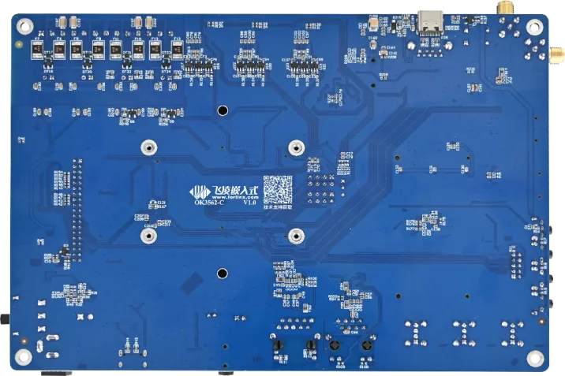
Back
The hardware parameters are not described in this software manual. Before referring to this manual for software development, please read “OK3562-C _ Hardware Manual” under the path of “02-User Data \ 03-Hardware Data \ 02-Manual” to understand the product naming rules and the hardware configuration information of the product you use, which is helpful for you to use this product.
1.1 Introduction to Linux 5.10.198 System Software Resources
Device |
Location of driver source code in the kernel |
Device Name |
|---|---|---|
LCD Backlight Driver |
drivers/video/backlight/pwm_bl.c |
/sys/class/backlight |
USB interface U disk |
drivers/usb/storage/ |
|
USB mouse |
drivers/hid/usbhid/ |
/dev/input/mice |
Ethernet |
drivers/net/ethernet/stmicro/stmmac |
|
SD/micro TF card driver |
drivers/mmc/host/dw_mmc-rockchip.c |
/dev/block/mmcblk1pX |
EMMC driver |
drivers/mmc/host/dw_mmc-rockchip.c |
/dev/block/mmcblk2pX |
Camera |
drivers/media/i2c/ov13855.c drivers/media/i2c/ov5645.c |
/dev/videoX |
LCD Controller |
drivers/gpu/drm/rockchip/rockchip_drm_vop.c |
|
MIPI CSI |
drivers/phy/rockchip/phy-rockchip-mipi-rx.c |
|
MIPI DSI |
drivers/phy/rockchip/phy-rockchip-inno-mipi-dphy.c |
|
LCD Touch Driver |
drivers/input/touchscreen/goodix.c drivers/input/touchscreen/edt-ft5x06.c |
/dev/input/eventX |
RTC driver |
drivers/rtc/rtc-rx8010.c drivers/rtc/rtc-pcf8563.c |
/dev/rtc0 |
Serial port |
drivers/tty/serial/8250/8250_dw.c |
/dev/ttySX |
Key Driver |
drivers/input/keyboard/adc-keys.c |
/dev/input/eventX |
LED |
drivers/leds/leds-gpio.c |
|
I2S |
sound/soc/rockchip/rockchip_i2s.c |
|
PMIC |
drivers/mfd/rk808.c drivers/regulator/rk808-regulator.c |
|
PCIE |
drivers/pci/controller/pcie-rockchip.c |
|
Watchdog |
drivers/watchdog/dw_wdt.c |
/dev/watchdog |
SPI |
drivers/spi/spi-rockchip.c |
/dev/spidev2.0 |
PWM |
drivers/video/backlight/pwm_bl.c |
1.2 EMMC Memory Partition Table
The following table shows the eMMC memory partition information for the Linux operating system (calculated with a block size of 512bit):
Partition Index |
Name |
Offset / Block |
Size/Block |
Content |
|---|---|---|---|---|
N/A |
security |
0x00000000 |
0x00004000 |
MiniLoaderAll.bin |
1 |
uboot |
0x00004000 |
0x00002000 |
uboot.img |
2 |
misc |
0x00006000 |
0x00002000 |
misc.img |
3 |
boot |
0x00008000 |
0x00020000 |
boot.img |
4 |
recovery |
0x00028000 |
0x00040000 |
recovery.img |
5 |
backup |
0x00068000 |
0x00010000 |
|
6 |
rootfs |
0x00078000 |
0x00c00000 |
rootfs.img |
7 |
oem |
0x00c78000 |
0x00040000 |
oem.img |
8 |
amp |
0x00cb8000 |
0x00002000 |
amp.img |
9 |
userdata |
0x00cba000 |
userdata.img |
2. Fast Startup
2.1 Preparation Before Startup
The OK3562 development board has two system login methods, serial and network login.
Hardware preparation before system startup:
12V3A DC power
Debugging serial cable (serial login use)
The debug serial port on the development board is a Type-C USB jack, so users can use a USB to Type-C cable to connect the development board to a PC and then check the board’s status.
Network cable (for network login)
According to the development board interface to connect the screen (Based on display needs).
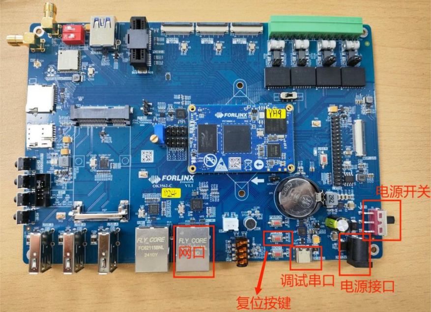
Note: The debug serial port marked in the diagram actually shares a Type-C interface between UART0 and UART9. UART9 serves as the debug serial port for the bare core when AMP (Asymmetric Multi-Processing) function is enabled (switch S4 needs to be set to UART mode).
2.3 Serial Login
The debugging serial port of the OK3562-C - C platform uses a Type - C interface. There is an on - board USB to UART chip, so there’s no need to purchase a USB to serial port debugging tool. It is extremely simple and convenient to use.
2.3.1 Serial Port Connection Settings
Note:
Serial terminal login for Forlinx users:
User’s name: forlinx
Password: forlinx
Serial terminal login root user: account root, password root;
Serial port settings: Baud rate 115200, 8 data bits, 1 stop bit, no parity bit, no flow control;
Hardware Requirements: Type-C cable required to connect PC and development boards;
Software requirements: PC Windows system needs to install the super terminal software. Because the terminal software has many types, users can choose their familiar one.
Let’s take putty as an example to introduce the login method of serial port:
Step 1: Connect the serial port number of the computer—check the serial port number from the device manager (Based on the port actually recognized by the computer );

Step 2: Open and set up putty, then set the“ line according to the COM port of the computer used, baud rate 115200;

Step 3: After the setting, input the COM port used by the computer in Saved Sessions. The following figure takes COM24 as an example, save the settings, open the serial port again later, and click on the saved port number;

2.3.2 Serial Port Login
After the terminal software on the PC side is set, connect the PC and the development board through the serial port cable, and power on after connecting the power supply. The startup information can be seen through the terminal software.
The following startup message indicates a successful start, allowing a new command line to be entered by pressing Enter:

ForlinxDesktop系统已有用户：
User’s name |
forlinx |
root |
|---|---|---|
Password |
forlinx |
root |
Note: If the message shows [root@buildroot]#, it indicates the first reboot after the initial firmware burn. At this point, do not perform any operations; wait for it to reboot automatically. forlinx login: is the normal state.
2.4 Network Login Methods
2.4.1 Network Connection Test
Note:
The factory default configuration of the card is static IP; the IP address is 192.168.0.123. Please refer to “3.2.17 Ethernet Configuration” chapter for the static IP changing method;
The computer and board should be on the same network segment for testing.
Before logging into the network, ensure that the direct network connection between the computer and the development board is functioning properly. You can test the connection status via pin command. The specific method is as follows:
1. Connect the development board’s eth0 interface to the computer using an Ethernet cable. Power on the board and boot the kernel. Confirm the blue heartbeat LED is blinking. Check the network card connection, ensuring its LED flashes rapidly. Once confirmed, proceed with testing the network connection;
2. Close the computer firewall (General computer operations, not described here in detail), then open the computer’s run command;
3. Use cmd to open the administrator interface , and the ping command to test the network connection status of the computer and the development board.
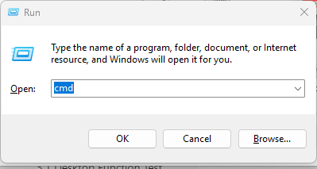
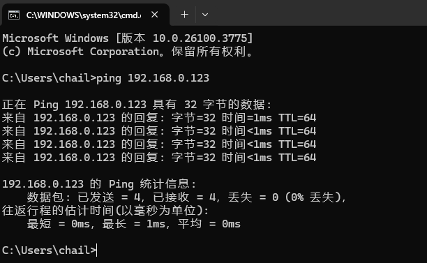
A data return indicates a normal network connection.
2.4.2 SSH server
Note:
The factory default configuration of the card is static IP; the IP address is 192.168.0.123. Please refer to “3.2.17 Ethernet Configuration” chapter for the static IP changing method;
Users: forlinx, Password: forlinx;
User: root user; password: root.
1. Use ssh to log in the development board;

Click “Open”, the following dialog box will appear, click “Yes” to enter the login screen.

SSH into the account: ssh forlinx@192.168.0.123
Password for forlinx@192.168.0.123: // Enter the password "forlinx" for the "forlinx" account on the development board as prompted
Welcome to Ubuntu 22.04.5 LTS (GNU/Linux 5.10.198 aarch64)
* Documentation: https://help.ubuntu.com
* Management: https://landscape.canonical.com
* Support: https://ubuntu.com/pro
This system has been minimized by removing packages and content that are
not required on a system that users do not log into.
To restore this content, you can run the 'unminimize' command.
Extended Security Maintenance (ESM) for Applications is not enabled.
5 updates can be applied immediately.
Among these updates, 3 are standard security updates.
To view these additional updates, run: apt list --upgradable
41 additional security updates can be obtained and installed through ESM Apps.
Learn how to enable ESM Apps at: https://ubuntu.com/esm
Last login: Sun Apr 27 14:20:51 2025 from 192.168.0.110
To run a command as an administrator (user "root"), use "sudo <command>".
See "man sudo_root" for details.
forlinx@ok3562:~$
2.4.3 FTP and SFTP
Path: OK3562-C (Linux) user profile\tool\FileZilla*
OK3562 development board supports FTP and SFTP services, which are automatically enabled upon startup. Once the IP address is configured, it can function as an SFTP server.
The following is an example of how to use SFTP to transfer files using the filezilla tool.
Install the FileZilla tool on Windows and follow the steps shown in the image below to configure it. Use “forlinx” as both the username and password.
Open the FileZilla tool, click on File and select Site Manager.
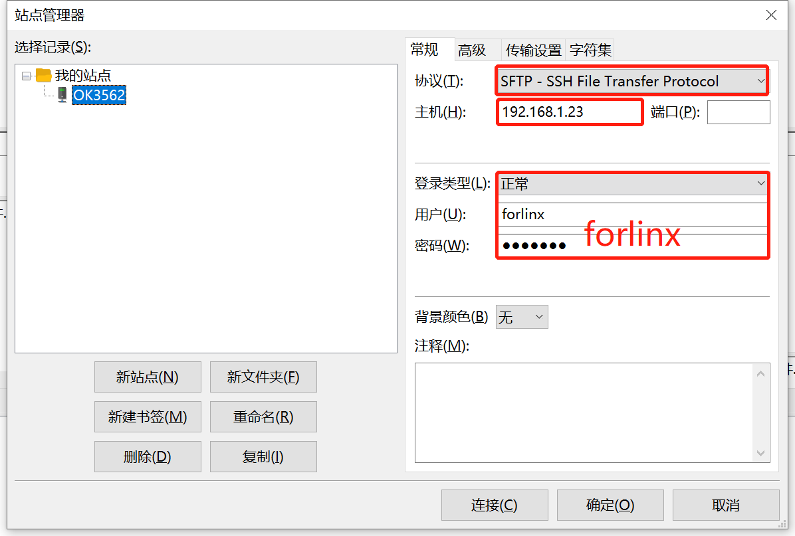
After successful login, you can upload and download.
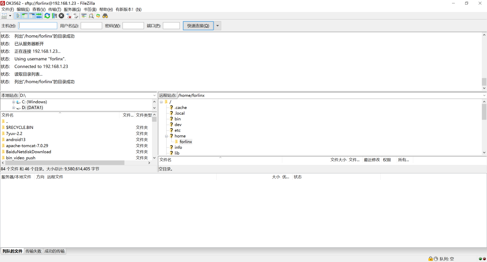
2.5 Screen Switching
OK3562 supports MIPI DSI and LVDS screen interfaces, and can only support display on one screen. There are currently three screen switching control methods: dynamic control via uboot menu, specification via kernel device tree, and control through the QT UbootMenu application.
2.5.2 Kernel Device Tree Specification
The method doesn’t require a serial port terminal connection. The system image defaults to the desired configuration, making it suitable for mass production. However, we need to modify the device tree and regenerate the system image once again.
Note: This method has higher priority than the uboot screen selection, and the uboot selection will not take effect after the device tree is modified.
Device tree path: kernel/arch/arm64/boot/dts/rockchip/OK3562-C-common.dtsi
In the kernel source code, open the device dtsi file and find the forlinx-control node as follows:

The node has a default disabled state and needs to be changed to an okay enabled node. Change according to screen requirements.
Parameter Description:
Parameter |
Meaning |
|---|---|
status |
Describe the node state: disabled is for off, okay is for on |
disp_type |
Specify the mipi or lvds screen display. |
Users need to change the setting parameters as required. After saving, it is necessary to recompile and generate an image.
Examples:
Use the LVDS screen display.

After saving, recompile to generate the image.
2.6 System Shutdown
In general, you can simply turn off the power. However, if you’re working with data storage or using specific functions, avoid unplugging the power to prevent potential irreversible file damage. To ensure the data is completely written, enter the sync command to synchronize the data before turning off the power.
Note: For products designed based on the SoM, if there are scenarios where accidental power loss causes the system to shut down unexpectedly, measures such as adding power-loss protection can be incorporated into the design.
3. OK3562 Platform Function Test
3.1 Interface Function Test
3.1.1 Introduction to Interface Functions
After the development board is started for the first time, you need to enter the login password and click login. The login user is forlinx, and the password is forlinx. After entering the desktop, it is as follows:
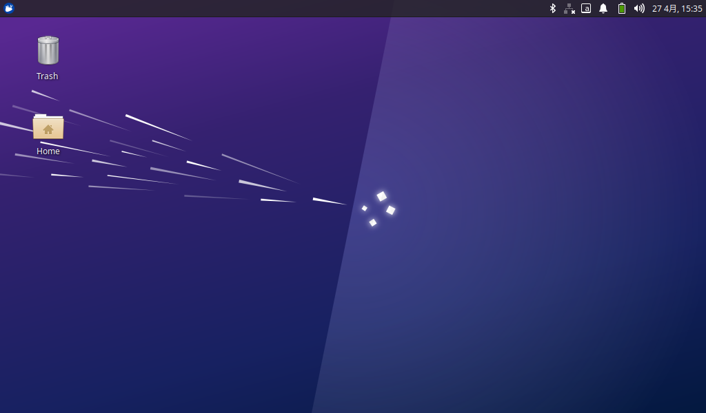
3.1.2 Virtual Keyboard Settings
The system integrates a virtual keyboard. Click the icon in the upper corner and move the mouse to the virtual keyboard option to select the virtual keyboard.

After selection, the virtual keyboard will pop up in the page.

3.1.3 WiFi Test
The OK3562 platform has a 6221A-SRC (RTL8821CS) module onboard by default, which is a WiFi/Bluetooth integrated module to test the WiFi function. The WiFi module exists in the system in the form of wlan0 node, and this test corresponds to wlan0 (other corresponding nodes are used when there are multiple devices). To configure WiFi, use the mouse to click the network icon in the upper right corner:
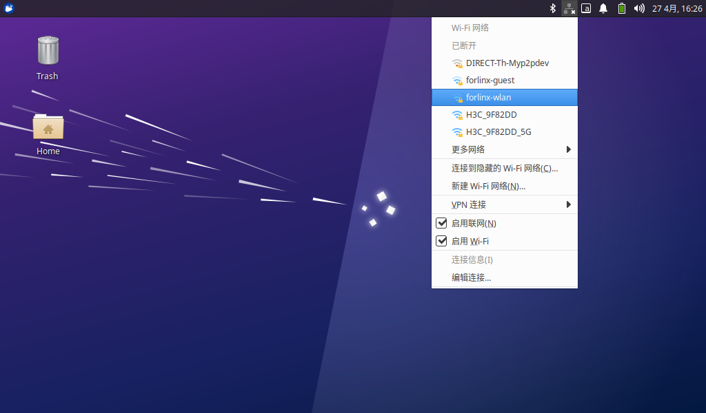
Click the WiFi name listed under the WiFi network, pop up the WiFi configuration interface, and enter the password:
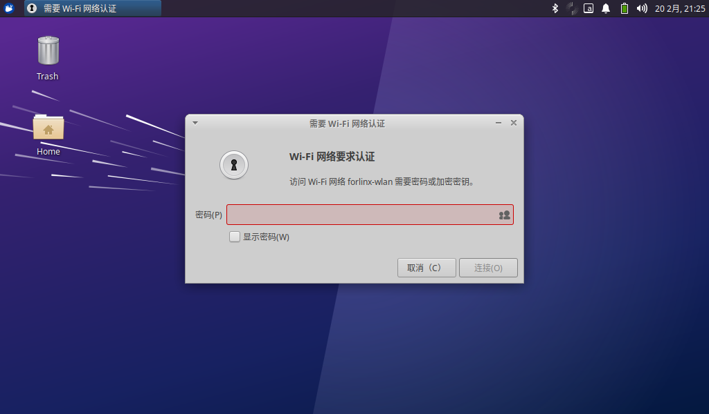
Click “Connect” and the WiFi connection is completed:

3.1.4 Browser Test
ForlinxDesktop integrates Google Chrome, etc. When using it, please make sure the network is smooth and dns is available before accessing the external network. Click on the Start menu in the lower left corner and select “Chromium Browser”:
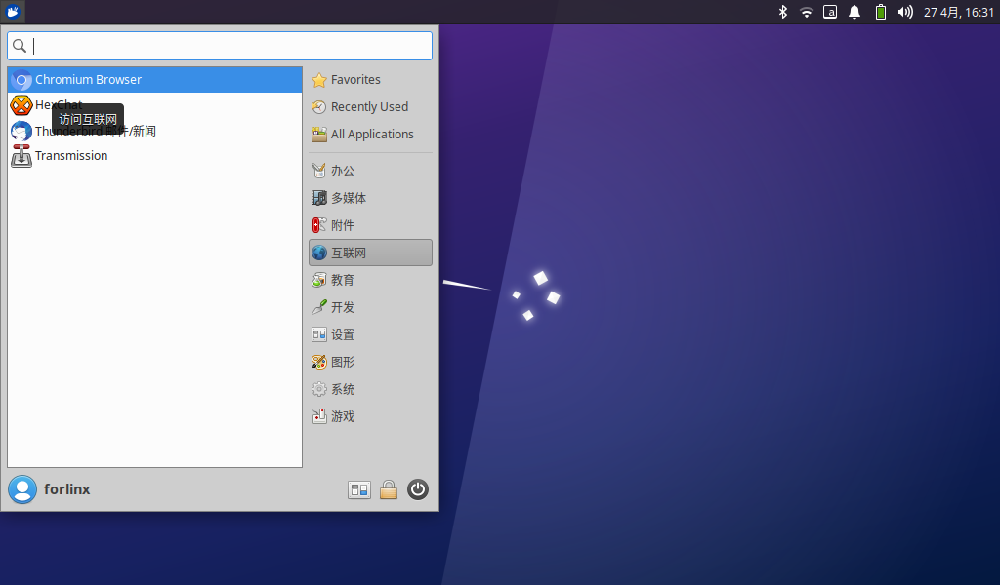
Enter the browser:

Click the search box to enter the website and visit the official website of Forlinx Embedded. The interface is as follows:
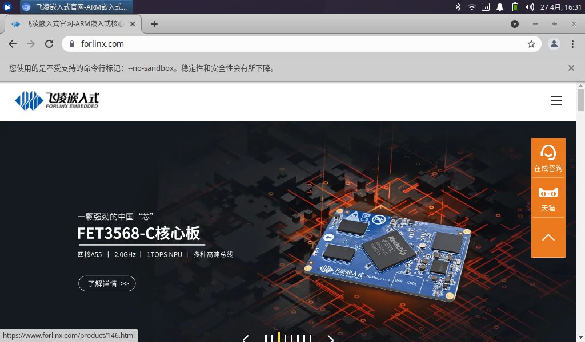
3.1.5 Bluetooth Test
The default 6221A-SRC (RTL8821CS) module of OK3562 platform is a WiFi/Bluetooth integrated module to test the Bluetooth function. To configure Bluetooth, you need to right-click the Bluetooth icon in the lower right corner. Bluetooth is enabled by default:

Select “Send Files to Device” and select the corresponding file:

Click “OK” to select the corresponding equipment:

After clicking “OK”, the file transfer starts:
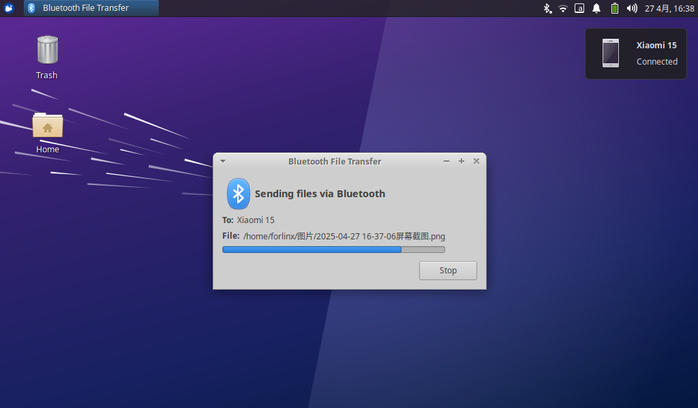
3.1.6 File Manager
Click Home on the desktop to manage files:

3.2 Command Line Function Test
The OK3562 platform has various built-in command line tools available to users.
3.2.1 System Information Queries
View kernel:
root@ok3562:~# uname -a
Linux ok3562 5.10.198 #1 SMP Thu Apr 24 16:29:44 CST 2025 aarch64 aarch64 aarch64 GNU/Linux
View environment variable information:
root@ok3562:~# env | sort
ADBD_SHELL=/bin/bash
ADB_TCP_PORT=5555
COGL_DRIVER=gles2
DBUS_SESSION_BUS_ADDRESS=unix:path=/run/user/0/bus
DEBUGINFOD_URLS=
DISPLAY=:0
GST_GL_API=gles2
GST_GL_PLATFORM=egl
HOME=/root
HUSHLOGIN=FALSE
INVOCATION_ID=4a89fa1c97364f5392206f0451e93eb8
JOURNAL_STREAM=7:23265
LANGUAGE=zh_CN:zh:en_US:en
LANG=zh_CN.UTF-8
LC_ALL=zh_CN.UTF-8
LOGNAME=root
LS_COLORS=rs=0:di=01;34:ln=01;36:mh=00:pi=40;33:so=01;35:do=01;35:bd=40;33;01:cd=40;33;01:or=40;31;01:mi=00:su=37;41:sg=30;43:ca=30;41:tw=30;42:ow=34;42:st=37;44:ex=01;32:*.tar=01;31:*.tgz=01;31:*.arc=01;31:*.arj=01;31:*.taz=01;31:*.lha=01;31:*.lz4=01;31:*.lzh=01;31:*.lzma=01;31:*.tlz=01;31:*.txz=01;31:*.tzo=01;31:*.t7z=01;31:*.zip=01;31:*.z=01;31:*.dz=01;31:*.gz=01;31:*.lrz=01;31:*.lz=01;31:*.lzo=01;31:*.xz=01;31:*.zst=01;31:*.tzst=01;31:*.bz2=01;31:*.bz=01;31:*.tbz=01;31:*.tbz2=01;31:*.tz=01;31:*.deb=01;31:*.rpm=01;31:*.jar=01;31:*.war=01;31:*.ear=01;31:*.sar=01;31:*.rar=01;31:*.alz=01;31:*.ace=01;31:*.zoo=01;31:*.cpio=01;31:*.7z=01;31:*.rz=01;31:*.cab=01;31:*.wim=01;31:*.swm=01;31:*.dwm=01;31:*.esd=01;31:*.jpg=01;35:*.jpeg=01;35:*.mjpg=01;35:*.mjpeg=01;35:*.gif=01;35:*.bmp=01;35:*.pbm=01;35:*.pgm=01;35:*.ppm=01;35:*.tga=01;35:*.xbm=01;35:*.xpm=01;35:*.tif=01;35:*.tiff=01;35:*.png=01;35:*.svg=01;35:*.svgz=01;35:*.mng=01;35:*.pcx=01;35:*.mov=01;35:*.mpg=01;35:*.mpeg=01;35:*.m2v=01;35:*.mkv=01;35:*.webm=01;35:*.webp=01;35:*.ogm=01;35:*.mp4=01;35:*.m4v=01;35:*.mp4v=01;35:*.vob=01;35:*.qt=01;35:*.nuv=01;35:*.wmv=01;35:*.asf=01;35:*.rm=01;35:*.rmvb=01;35:*.flc=01;35:*.avi=01;35:*.fli=01;35:*.flv=01;35:*.gl=01;35:*.dl=01;35:*.xcf=01;35:*.xwd=01;35:*.yuv=01;35:*.cgm=01;35:*.emf=01;35:*.ogv=01;35:*.ogx=01;35:*.aac=00;36:*.au=00;36:*.flac=00;36:*.m4a=00;36:*.mid=00;36:*.midi=00;36:*.mka=00;36:*.mp3=00;36:*.mpc=00;36:*.ogg=00;36:*.ra=00;36:*.wav=00;36:*.oga=00;36:*.opus=00;36:*.spx=00;36:*.xspf=00;36:
MAIL=/var/mail/root
MOTD_SHOWN=pam
PATH=/usr/local/sbin:/usr/local/bin:/usr/sbin:/usr/bin:/sbin:/bin:/usr/games:/usr/local/games:/snap/bin
PWD=/root
QTWEBENGINE_CHROMIUM_FLAGS=--no-sandbox --disable-es3-gl-context --ignore-gpu-blacklist --ignore-gpu-blocklist --enable-accelerated-video-decode
QT_XCB_GL_INTEGRATION=xcb_egl
SHELL=/bin/bash
SHLVL=0
SYSTEMD_EXEC_PID=866
TERM=xterm-color
TZ=Asia/Shanghai
USER=root
_=/usr/bin/env
XDG_DATA_DIRS=/usr/share/gnome:/usr/local/share:/usr/share:/var/lib/snapd/desktop
XDG_RUNTIME_DIR=/run/user/0
XDG_SESSION_CLASS=user
XDG_SESSION_ID=c3
XDG_SESSION_TYPE=tty
3.2.2 FM Test
Note: The quad-core A53 is cpu0, cpu1, cpu2, and cpu3. This process takes cpu0 as an example, and the actual process of cpu1, cpu2, and cpu3 will change at the same time.
All cpufreq governor types supported in the current kernel:
root@ok3562:~# cat /sys/devices/system/cpu/cpu0/cpufreq/scaling_available_governors
interactive conservative ondemand userspace powersave performance schedutil
“userspace” refers to user mode, in which user programs are allowed to adjust the CPU frequency.
View the current CPU supported frequency level;
root@ok3562:~# cat /sys/devices/system/cpu/cpu0/cpufreq/scaling_available_frequencies
408000 600000 816000 1008000 1200000 1416000 1608000 1800000 2016000
Set to user mode and modify the frequency to 1200000：
root@ok3562:~# echo userspace > /sys/devices/system/cpu/cpu0/cpufreq/scaling_governor
root@ok3562:~# echo 1200000 > /sys/devices/system/cpu/cpu0/cpufreq/scaling_setspeed
4. View the current frequency after modification:
root@ok3562:~# cat /sys/devices/system/cpu/cpu0/cpufreq/cpuinfo_cur_freq
1200000
3.2.3 Temperature Test
View the temperature value:
root@ok3562:~# cat /sys/class/thermal/thermal_zone0/temp
45307
The temperature value is 45.3°C.
3.2.4 Watchdog Test
Watchdog is a function often used in embedded systems. The device node of watchdog in OK3568 is/dev/watchdog. This test provides two test procedures, and the user can choose one of them to test according to the actual situation.
1. Start fltest_watchdog, set the charm to time 10s, and feed the dog regularly;
forlinx@ok3568:~$ sudo fltest_watchdog
Watchdog Ticking Away!
This command turns on the watchdog and performs a feed, so the system does not reboot.
Note: When ctrl + C is used to end the test program, the system will reset after 10 seconds. If you do not want to reset, please input within 10 seconds after ctrl + C:
forlinx@ok3568:~$ sudo fltest_watchdog -d
Watchdog card disabled. //Turn off the watchdog
2. Start fltest_watchdogrestart, set the reset time to 10s without feeding the dog.
forlinx@ok3568:~$ sudo fltest_watchdogrestart
Restart after 10 seconds
This command turns on the watchdog, but does not feed the dog, and the system reboots after 10 seconds.
3.2.5 RTC Function Test
Note: Ensure that button cell batteries are installed on the board and the battery voltage is normal.
RTC test: The main way to set the software and hardware time is by using the date and hwclock utilities. When performing the board power-down and power-up test, the software clock reads whether the RTC clock is synchronized or not.
Time setting:
root@ok3562:~# date -s "2022-12-12 17:23:00" // Set the software time
Mon Dec 12 17:23:00 CST 2022
root@ok3562:~# hwclock -w // Synchronize the software time to the hardware time
root@ok3562:~# hwclock -r // Display the hardware time
Mon Dec 12 17:23:06 CST 2022
Then power down and power up the board, enter the system, and read the system time. After that, we can see that the time has synchronized.
root@ok3562:~# date
Mon Dec 12 17:23:28 CST 2022
3.2.6 Key Test
Use the fltest_keytest command line tool to test the keys. fltest_keytest currently supports the test of four keys on the carrier board, VOL+, VOL-, MENU, and ESC, with key codes 115, 114, 139, and 158, respectively.
Execute the following command, noting that it is event4 when a touchscreen is present:
root@ok3562:~# fltest_keytest /dev/input/event3
At this point, press the lift button in sequence, and the following can be output on the terminal:
key115 Pressed // VOL+ pressed
key115 Released // VOL+ released
key114 Pressed // VOL- pressed
key114 Released // VOL- released
key139 Pressed // MENU pressed
key139 Released // MENU released
key158 Pressed // ESC pressed
key158 Released // ESC released
3.2.7 UART Test
UART0, UART2, UART8 and UART9 serial ports are indicated in the schematic diagram of OK3562 platform carrier board, in which UART0 is a debugging serial port, UART8 is a Bluetooth serial port, and UART2 and UART9 are 485 serial ports. The default device names of UART2 and UART9 in the development board are ttyS2 and ttyS9 respectively. Supports up to 4M baud rate
UART |
Device Nodes |
Description |
|---|---|---|
UART2 |
/dev/ttyS2 |
RS485 |
UAT8 |
/ev/ttyS8 |
It is used for Bluetooth and is not separately pinned out and can’t be directly used for this test. |
UART9 |
/dev/ttyS9 |
RS485 |
This test uses UART2 and UART9 to short 485 _ B1 and 485 _ B0, 485 _ A1 and 485 _ A0 in P36 port. GND _ 485 _ 0, GND _ 485 _ 1 pin header, as shown in the figure:

Enter the following command in the serial port of the development board:
root@ok3562:~# fltest_uarttest -d /dev/ttyS2 &
[1] 1229
root@ok3562:~# Welcome to uart test
Send test data:
forlinx_uart_test.1234567890...
root@ok3562:~# fltest_uarttest -d /dev/ttyS9
Welcome to uart test
Send test data:
forlinx_uart_test.1234567890...
Read Test Data finished,Read:
forlinx_uart_test.1234567890...
3.2.8 ADC Test
OK3562-C development board is equipped with 13 x ADC, each channel can connect an adjustable resistor. For testing, select channel saradc0_in5. The hardware diagram of the ADC pin is as follows: input voltage at pin 1 of P11. The current chip uses a 1.8V reference voltage corresponding to a 10-bit ADC maximum of 1024.

Take SARADC _ VIN2 as an example to test the adjustable resistance value:
root@ok3562:~# cd /sys/bus/iio/devices/iio:device0
root@ok3562:/sys/bus/iio/devices/iio:device0# cat in_voltage5_raw
809
3.2.9 TF Card Test
Description: The SD card mount directory is /run/media/ and supports hot-swapping.
1. Insert the TF card into the TF card slot on the carrier board before powe-up . Then power up and start, run the command dmesg, and the terminal will have the following printed information:

2. Check the mount directory:
root@ok3562:~# mount | grep "mmcblk1"
/dev/mmcblk1p1 on /run/media/mmcblk1p1 type vfat (rw,relatime,gid=6,fmask=0007,dmask=0007,allow_utime=0020,codepage=936,iocharset=utf8,shortname=mixed,errors=remount-ro)
3. Write test:
root@ok3562:~# dd if=/dev/zero of=/run/media/mmcblk1p1/test bs=1M count=500 conv=fsync
500+0 records in
500+0 records out
524288000 bytes (524 MB, 500 MiB) copied, 27.352 s, 19.2 MB/s
4. Read test:
Note: To ensure the accuracy of the data**, please restart the development board to test the reading speed.**
root@ok3562:~# dd if=/run/media/mmcblk1p1/test of=/dev/null bs=1M count=500 iflag=direct
500+0 records in
500+0 records out
524288000 bytes (524 MB, 500 MiB) copied, 5.95401 s, 88.1 MB/s
5. After using the TF card, uninstall it with umount before ejecting it.
root@ok3562:~# umount /run/media/mmcblk1p1
Note: Plug and unplug the TF card after exiting the TF card mounting path.
3.2.10 eMMC Test
OK3562 platform eMMC runs in HS200 mode 200MHz clock by default. The following is a simple eMMC read/write speed test: taking the read/write ext4 file system as an example.
Write test:
root@ok3562:~# dd if=/dev/zero of=/test bs=1M count=500 conv=fsync
500+0 records in
500+0 records out
524288000 bytes (524 MB, 500 MiB) copied, 2.93708 s, 179 MB/s
Read test：
Note: To ensure the accuracy of the data, please restart the development board to test the reading speed.
root@ok3562:~# dd if=/test of=/dev/null bs=1M iflag=direct
500+0 records in
500+0 records out
524288000 bytes (524 MB, 500 MiB) copied, 1.75773 s, 298 MB/s
3.2.11 USB Mouse Test
Connect the USB mouse to the USB interface of the OK3562 platform and use the dmesg command, the serial terminal prints the following information:
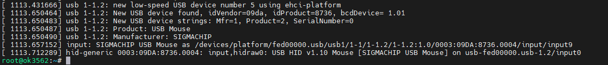
At this time, the arrow cursor appears on the screen, the mouse can work normally.
3.2.12 USB2.0
OK3562 supports three USB2.0 interfaces. Users can connect USB mouse, USB keyboard, U disk and other devices on any on-board USB HOST interface, and support hot plug of the above devices. Demonstration with a mounting USB flash drive; the current USB flash drive test support up to 32G, but no test for 32G or above.
The terminal prints information about the USB flash drive, and since many types of USB flash drives exist, the information displayed may vary:
After the development board booting, connect the USB interface disk to the USB host interface of the development board. The default log print information is low, so there will be no print information. Use the dmesg command to view and get information about the USB flash drive;

View the mount directory:
root@ok3562:~# mount | grep "sda1"
/dev/sda1 on /run/media/sda1 type vfat (rw,relatime,gid=6,fmask=0007,dmask=0007,allow_utime=0020,codepage=936,iocharset=utf8,shortname=mixed,errors=remount-ro)
You can see the USB mount directory: /run/media/sda1
View the contents of the U disk (sda1 is based on the actual USB flash drive partition name).
root@ok3562:~# ls -l /run/media/sda1/
total 8
drwxrwx--- 2 root disk 8192 Sep 23 2021 'System Volume Information'
-rwxrwx--- 1 root disk 0 Apr 25 09:25 test
Write test: Write speeds are limited by the specific storage device:
root@ok3562:~# dd if=/dev/zero of=/run/media/sda1/test bs=1M count=500 conv=fsync
500+0 records in
500+0 records out
524288000 bytes (524 MB, 500 MiB) copied, 26.1422 s, 20.1 MB/s
Read test：
Note: To ensure the accuracy of the data, please restart the development board to test the reading speed.
root@ok3562:~# dd if=/run/media/sda1/test of=/dev/null bs=1M iflag=direct
500+0 records in
500+0 records out
524288000 bytes (524 MB, 500 MiB) copied, 17.268 s, 30.4 MB/s
Before removing the USB flash drive, it’s necessary to unmount it using ‘’umount’’.
root@ok3562:~# umount /run/media/sda1
Note: Exit the USB flash drive mount path before plugging and unplugging the USB flash drive.
3.2.13 USB to Four Serial Port Test
Note:
Supports XR21V1414 USB to serial port chip driver;
USB to four serial port conversion is an optional module. If you have the need for it, please contact the sales personnel of Forlinx Embedded.
1. After powering on the development board, connecting the USB to four serial port modules via USB HOST shows specific printing info on the terminal.
[ 1342.988297] usb 1-1.1: new full-speed USB device number 7 using ehci-platform
[ 1343.203897] usb 1-1.1: New USB device found, idVendor=04e2, idProduct=1414, bcdDevice= 0.03
[ 1343.203914] usb 1-1.1: New USB device strings: Mfr=0, Product=0, SerialNumber=0
[ 1343.206127] cdc_xr_usb_serial 1-1.1:1.0: This device cannot do calls on its own. It is not a modem.
[ 1343.206480] cdc_xr_usb_serial 1-1.1:1.0: ttyXR_USB_SERIAL0: USB XR_USB_SERIAL device
[ 1343.210587] cdc_xr_usb_serial 1-1.1:1.2: This device cannot do calls on its own. It is not a modem.
[ 1343.210924] cdc_xr_usb_serial 1-1.1:1.2: ttyXR_USB_SERIAL1: USB XR_USB_SERIAL device
[ 1343.214331] cdc_xr_usb_serial 1-1.1:1.4: This device cannot do calls on its own. It is not a modem.
[ 1343.214605] cdc_xr_usb_serial 1-1.1:1.4: ttyXR_USB_SERIAL2: USB XR_USB_SERIAL device
[ 1343.218160] cdc_xr_usb_serial 1-1.1:1.6: This device cannot do calls on its own. It is not a modem.
[ 1343.218523] cdc_xr_usb_serial 1-1.1:1.6: ttyXR_USB_SERIAL3: USB XR_USB_SERIAL device
2. Check the usb device status by lsusb:
root@ok3562:~# lsusb
Bus 002 Device 001: ID 1d6b:0001 Linux Foundation 1.1 root hub
Bus 001 Device 007: ID 04e2:1414 Exar Corp.
Bus 001 Device 002: ID 1a40:0101 Terminus Technology Inc. Hub
Bus 001 Device 001: ID 1d6b:0002 Linux Foundation 2.0 root hub
Check whether a serial port node is generated under dev:
root@3562:/# ls /dev/ ttyXRUSB*
/dev/ttyXRUSB0 /dev/ttyXRUSB1 /dev/ttyXRUSB2 /dev/ttyXRUSB3
3. The mapping between the four extended serial ports and their corresponding device nodes is shown in the diagram below:

4. Refer to “3.2.7 UART Test” for the test methods.
3.2.14 USB3.0 / USB OTG Test
USB3.0 / USB OTG and PCIe on the OK3562-C platform are multiplexed functions. USB3.0 supports only Host mode, and USB OTG supports only USB2.0.
To test the USB function (including USB3.0 and USB otg), turn the S3 DIP switch on the carrier board to the OFF position, and set the combphy _ type as USB in the Uboot menu. Refer to “4.2.29 Uboot Menu”.
USB Host mode allows you to connect standard USB devices, while Device mode supports functions such as firmware flashing, ADB file transfer, and debugging.
3.2.14.1 USB3.0 Host Mode:
1. Set the S2 DIP switch on the development board to the ON position;
2. Modify the device tree file arch/arm64/boot/dts/rockchip/OK3562-C-common.dtsi (default in factory image, no need to modify) to change the “dr_mode” property of the “usbdrd_dwc3” node to “host’, as shown in the following image.

3. Recompile the image and flash it into the development board;
4. Set the S3 DIP switch on the carrier board to the OFF position, and also set combphy_type to usb in the U-Boot menu;
5. Connect the USB 3.0 flash drive to the USB 3.0-A port (labeled P33) on the development board and recognize the flash drive.
[ 28.483585] usb 4-1: new SuperSpeed Gen 1 USB device number 3 using xhci-hcd
[ 28.502741] usb 4-1: New USB device found, idVendor=05e3, idProduct=0747, bcdDevice= 8.19
[ 28.502758] usb 4-1: New USB device strings: Mfr=3, Product=4, SerialNumber=5
[ 28.502762] usb 4-1: Product: USB Storage
[ 28.502765] usb 4-1: Manufacturer: Generic
[ 28.502768] usb 4-1: SerialNumber: 000000000819
[ 28.505286] usb-storage 4-1:1.0: USB Mass Storage device detected
[ 28.506496] scsi host0: usb-storage 4-1:1.0
[ 29.528489] scsi 0:0:0:0: Direct-Access Generic STORAGE DEVICE 0819 PQ: 0 ANSI: 6
[ 29.929357] sd 0:0:0:0: [sda] 31116288 512-byte logical blocks: (15.9 GB/14.8 GiB)
[ 29.930565] sd 0:0:0:0: [sda] Write Protect is off
[ 29.930583] sd 0:0:0:0: [sda] Mode Sense: 87 00 00 00
[ 29.931626] sd 0:0:0:0: [sda] Write cache: disabled, read cache: enabled, doesn't support DPO or FUA
[ 29.963619] sda: sda1
[ 29.967627] sd 0:0:0:0: [sda] Attached SCSI removable disk
6. Check the mount directory:
root@ok3562:~# mount | grep "sda"
/dev/sda1 on /run/media/sda1 type vfat (rw,relatime,gid=6,fmask=0007,dmask=0007,allow_utime=0020,codepage=936,iocharset=utf8,shortname=mixed,errors=remount-ro)
The mount path for the USB storage device can be found at /run/media/sda.
7. View the contents of the USB drive (replace “sda” with the actual partition name of the USB drive).
root@ok3562:~# ls -l /run/media/sda1/
total 1048576
-rwxrwxrwx 1 root root 1073741824 Jan 1 1980 test1g
8. Write test: Write speeds are limited by the specific storage device:
root@ok3562:~# dd if=/dev/zero of=/run/media/sda1/test bs=1M count=500 conv=fsync
500+0 records in
500+0 records out
524288000 bytes (524 MB, 500 MiB) copied, 3.60126 s, 146 MB/s
9. Read test:
Note: To ensure the accuracy of the data, please restart the development board to test the reading speed.
root@ok3562:~# dd if=/run/media/sda1/test of=/dev/null bs=1M count=500 iflag=direct
500+0 records in
500+0 records out
524288000 bytes (524 MB, 500 MiB) copied, 1.15981 s, 452 MB/s
10. Before removing the USB flash drive, it’s necessary to unmount it using ‘’umount’’.
root@ok3562:~# umount /run/media/sda1
Note: Exit the USB flash drive mount path before plugging and unplugging the USB flash drive.
3.2.14.2 USB OTG Mode
1. Modify the usbdrd_dwc3 node in the device tree; arch/arm64/boot/dts/rockchip/OK3562-C-common.dtsi, as shown in the following image;

2. Recompile the image and flash it into the development board;
3. Set the S3 DIP switch on the carrier board to the OFF position, and also set combphy_type to usb in the U-Boot menu;
Host mode requires setting switch S2 on the carrier board to the ON position.
Insert a USB flash drive into the P33 USB-A port to enable recognition. The USB flash drive operates at USB 2.0 speed (Toggle switch S2 to OFF and back to ON if automatic recognition fails).
Connect the USB flash disk to the USB3.0-A port of the development board (silk-screen P33) to identify the USB flash disk:
[ 48.317004] usb 3-1: new high-speed USB device number 3 using xhci-hcd
[ 48.460355] usb 3-1: New USB device found, idVendor=05e3, idProduct=0747, bcdDevice= 8.19
[ 48.460422] usb 3-1: New USB device strings: Mfr=3, Product=4, SerialNumber=5
[ 48.460449] usb 3-1: Product: USB Storage
[ 48.460470] usb 3-1: Manufacturer: Generic
[ 48.460491] usb 3-1: SerialNumber: 000000000819
[ 48.463227] usb-storage 3-1:1.0: USB Mass Storage device detected
[ 48.465081] scsi host0: usb-storage 3-1:1.0
[ 49.492654] scsi 0:0:0:0: Direct-Access Generic STORAGE DEVICE 0819 PQ: 0 ANSI: 6
[ 49.940084] sd 0:0:0:0: [sda] 124735488 512-byte logical blocks: (63.9 GB/59.5 GiB)
[ 49.941418] sd 0:0:0:0: [sda] Write Protect is off
[ 49.942545] sd 0:0:0:0: [sda] Write cache: disabled, read cache: enabled, doesn't support DPO or FUA
[ 49.970261] sd 0:0:0:0: [sda] Attached SCSI removable disk
In Device mode, the S2 DIP switch on the carrier board needs to be set to the OFF position.
Connect the computer to the development board P35 USB-type C socket with the USB-a to USB-C cable, and restart the development board.

Rockchip development tool shows “found an ADB device”, you can download files from the development board to the computer through ADB pull, and upload files from the computer to the development board through ADB push.
Open the RKDevTool_Release/bin directory in the Win10 PowerShell terminal.
Windows PowerShell
Copyright(C) Microsoft Corporation. All rights reserved.
Try a new cross-platform PowerShell https://aka.ms/pscore6
PS C:\Users\Acer> cd D:\rk3562\RKDevTool\RKDevTool_Release\bin
PS D:\rk3562\RKDevTool\RKDevTool_Release\bin> .\adb.exe devices
List of devices attached
38bc17e18f2c57bc device
PS D:\rk3562\RKDevTool\RKDevTool_Release\bin> .\adb.exe push D:\test.mp3 /home/forlinx/
D:\test.mp3: 1 file pushed. 13.8 MB/s (4818092 bytes in 0.334s)
PS D:\rk3562\RKDevTool\RKDevTool_Release\bin>
PS D:\rk3562\RKDevTool\RKDevTool_Release\bin> .\adb.exe pull /home/forlinx/test
/home/forlinx/test: 1 file pulled. 0.0 MB/s (29 bytes in 0.002s)
PS D:\rk3562\RKDevTool\RKDevTool_Release\bin> ls .\test
Directory: D:\rk3562\RKDevTool\RKDevTool_Release\bin
Mode LastWriteTime Length Name
---- ------------- ------ ----
-a---- 2024/4/25 12:14 29 test
PS D:\rk3562\RKDevTool\RKDevTool_Release\bin>
PS D:\rk3562\RKDevTool\RKDevTool_Release\bin>
3.2.15 PCIE Test
Note: OK3562 PCIE 2.0 and USB 3.0 cannot be used simultaneously.
OK3562-C board has 1 x PCIE 2.0.
Before powering up the system, insert the PCIE module into the PCIE card slot on the carrier board. Set the DIP switch S3 on the carrier board to ON, and in the U-Boot menu, set combphy_type to pcie. Refer to 4.2.29 Uboot Menu
After powering up and booting, from lspci we can see that the corresponding device enumeration is successful.
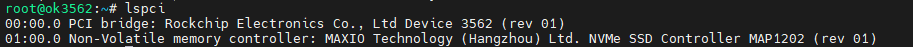
Due to the many types of pcie devices, it may not be supported by the kernel by default, so you need to add the corresponding driver for the compiled device by yourself.
Take PCIe to M.2 SSD as an example, the Linux kernel by default already includes the driver for this type of SSD. After inserting and powering on, you will be able to see enumeration information and corresponding devices will appear.
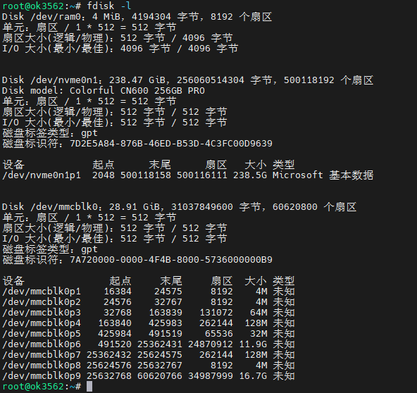
3.2.16 Ethernet Configuration
OK3562-C development board is equipped with two network cards, one Gigabit and one hundred-megabit. When connected to the network, eth0 is configured with a static IP address by default upon factory settings.
Configuration file path is:
forlinx@ok3562:~$ vi /etc/netplan/01-netcfg.yaml //Configuration file
network:
ethernets:
eth0: //Specify the network card
addresses: [192.168.0.123/24]
//Specify a fixed IP address and subnet mask
gateway4: 192.168.0.1 //Specify the gateway
nameservers:
addresses: [114.114.114.114,8.8.8.8] //Specify the DNS
eth1:
//Specify the network card
dhcp4: true
//Specify to obtain an IP address automatically
version: 2
3.2.17 WiFi Test
Note: The network environment is different, so please set it according to the actual situation when you do this experiment.
OK3562 platform supports WIFI Bluetooth 2-in-1 module: 6221A-SRC (RTL8821CS).
STA Mode
This mode means that it acts as a station and connects to the wireless network. In the following test, the router uses WPA encryption, the connected wifi hotspot name is: H3C_708_5G and the password is: 123456785. Due to the different network environments, please set up according to the actual situation when conducting this test:
1. Enter the following command in the development board terminal:
root@ok3562:~# nmcli dev wifi connect "forlinx-wlan" password "fl03123102650"
The meanings of the related parameters in the command are as follows:
Parameter |
Meaning |
|---|---|
connect |
Actual wifi hotspot connected |
password |
Password for wifi hotspot |
The serial port prints as follows:
root@ok3562:~# nmcli dev wifi connect “forlinx-wlan” password “fl03123102650”
Device “wlan0” was successfully activated with “2e0632c5-926a-437d-9288-7809948965e0”.
2. Check whether it can ping the external network and enter the following command in the terminal:
root@ok3562:~# ping baidu.com -c 4 //Specify to ping 4 times
PING baidu.com (39.156.66.10) 56(84) bytes of data.
64 bytes from 39.156.66.10 (39.156.66.10): icmp_seq=1 ttl=51 time=14.6 ms
64 bytes from 39.156.66.10 (39.156.66.10): icmp_seq=2 ttl=51 time=8.19 ms
64 bytes from 39.156.66.10 (39.156.66.10): icmp_seq=3 ttl=51 time=8.86 ms
64 bytes from 39.156.66.10 (39.156.66.10): icmp_seq=4 ttl=51 time=7.93 ms
--- baidu.com ping statistics ---
4 packets transmitted, 4 received, 0% packet loss, time 3005ms
rtt min/avg/max/mdev = 7.925/9.884/14.565/2.723 ms
root@ok3562:/#
AP Mode
Before conducting this test, ensure that the Gigabit network card eth0 is connected to the network and functioning properly, so that the mobile phone can access the Internet after connecting to the hotspot.
1. View the drive loading status;
root@ok3562:~# lsmod //View the loaded moudule
Module Size Used by
8821cs 2822144 0
2. Download iptables and configure to enable the forwarding function;
root@ok3562:~# apt-get install iptables
Reading package lists… Done
Building dependency tree… Done
Reading state information… Done
The following packages were automatically installed and are no longer required:
activity-log-manager ibus-data ibus-gtk ibus-gtk3 ibus-gtk4 libdee-1.0-4 libgeonames-common libgeonames0 libtimezonemap-data libtimezonemap1 libunity-control-center1 libxcb-xv0
libzeitgeist-2.0-0 python3-ibus-1.0 zeitgeist-core
Use ‘apt autoremove’ to remove them.
The following additional packages will be installed:
libip6tc2 libnftnl11
Suggested packages:
firewalld nftables
The following NEW packages will be installed:
iptables libip6tc2 libnftnl11
0 upgraded, 3 newly installed, 0 to remove and 19 not upgraded.
Need to get 536 kB of archives.
After this operation, 2,653 kB of additional disk space will be used.
Do you want to continue? [Y/n] y
Get:1 http://ports.ubuntu.com/ubuntu-ports jammy-updates/main arm64 libip6tc2 arm64 1.8.7-1ubuntu5.2 [20.2 kB]
Get:2 http://ports.ubuntu.com/ubuntu-ports jammy/main arm64 libnftnl11 arm64 1.2.1-1build1 [64.5 kB]
Get:3 http://ports.ubuntu.com/ubuntu-ports jammy-updates/main arm64 iptables arm64 1.8.7-1ubuntu5.2 [451 kB]
Fetched 536 kB in 2s (254 kB/s)
Selecting previously unselected package libip6tc2:arm64.
(Reading database … There are 176092 files and directories currently installed.)
Preparing to unpack …/libip6tc2_1.8.7-1ubuntu5.2_arm64.deb …
Unpacking libip6tc2:arm64 (1.8.7-1ubuntu5.2) …
Selecting previously unselected package libnftnl11:arm64.
Preparing to unpack …/libnftnl11_1.2.1-1build1_arm64.deb …
Unpacking libnftnl11:arm64 (1.2.1-1build1) …
Selecting previously unselected package iptables.
Preparing to unpack …/iptables_1.8.7-1ubuntu5.2_arm64.deb …
Unpacking iptables (1.8.7-1ubuntu5.2) …
Setting up libip6tc2:arm64 (1.8.7-1ubuntu5.2) …
Setting up libnftnl11:arm64 (1.2.1-1build1) …
Setting up iptables (1.8.7-1ubuntu5.2) …
update-alternatives: using /usr/sbin/iptables-legacy to provide /usr/sbin/iptables (iptables) in auto mode
update-alternatives: using /usr/sbin/ip6tables-legacy to provide /usr/sbin/ip6tables (ip6tables) in auto mode
update-alternatives: using /usr/sbin/iptables-nft to provide /usr/sbin/iptables (iptables) in auto mode
update-alternatives: using /usr/sbin/ip6tables-nft to provide /usr/sbin/ip6tables (ip6tables) in auto mode
update-alternatives: using /usr/sbin/arptables-nft to provide /usr/sbin/arptables (arptables) in auto mode
update-alternatives: using /usr/sbin/ebtables-nft to provide /usr/sbin/ebtables (ebtables) in auto mode
Processing triggers for man-db (2.10.2-1) …
Processing triggers for doc-base (0.11.1) …
Processing 2 added doc-base files…
Error in “/usr/share/doc-base/iptables.nat”, line 11: all Format' sections are invalid. Error in "/usr/share/doc-base/iptables.packet-filter", line 10: all Format’ sections are invalid.
Note: Use “install-docs --verbose --check file_name” for more details on the above errors.
Processing triggers for libc-bin (2.35-0ubuntu3.9) …
root@ok3562:~# update-alternatives --set iptables /usr/sbin/iptables-legacy
root@ok3562:~# iptables -t nat -A POSTROUTING -o eth0 -j MASQUERADE
root@ok3562:~# sysctl net.ipv4.ip_forward=1
net.ipv4.ip_forward = 1
3. Configure Hotspot;
WiFi Hotspot Name: OK3562_WIFI_2.4G_AP
Password: 12345678
root@ok3562:~# nmcli device wifi hotspot con-name 3568-test-AP ssid OK3562_WIFI_2.4G_AP password 12345678 ifname wlan0
Device “wlan0” was successfully activated with “dc0d2529-bb39-4b5b-ba61-8c692cb9eeee”.
Hint: “nmcli dev wifi show-password” shows Wi-Fi names and passwords.
4. Test connection.
At this point, a phone or computer can search for the Wi-Fi hotspot “OK3562_WIFI_2.4G_AP”. Once connected, you can access the internet.
3.2.18 Bluetooth Test
6221A-SRC（RTL8821CS）module on the OK3562 carrier board integrates Bluetooth. This section demonstrates data transfer via Bluetooth between a cell phone and the development board. It can support Bluetooth up to 4.2.
1. Bluetooth Configuration;
root@ok3562:~# bluetoothctl // Open the bluez Bluetooth tool
Agent registered
[bluetooth]# power on // Start the Bluetooth device
Changing power on succeeded
[bluetooth]# pairable on // Set to pairing mode
Changing pairable on succeeded
[bluetooth]# discoverable on // Set to discoverable mode
Changing discoverable on succeeded
[CHG] Controller 5C:C5:63:67:54:B1 Discoverable: yes
[bluetooth]# agent on // Start the agent
Agent is already registered
[bluetooth]# default-agent // Set the current agent as the default
Default agent request successful
2. Development Board Passive Pairing.
At this time, open the PC Bluetooth search, and a “OK3562” device will appear. Select pairing.

At the same time the printing message displays on the development board as follows, enter yes
[NEW] Device 8C:88:2B:43:64:63 WORK_PC
Request confirmation
[agent] Confirm passkey 187378 (yes/no): yes
[CHG] Device 8C:88:2B:43:64:63 UUIDs: 0000110c-0000-1000-8000-00805f9b34fb
[CHG] Device 8C:88:2B:43:64:63 UUIDs: 0000110e-0000-1000-8000-00805f9b34fb
[CHG] Device 8C:88:2B:43:64:63 Modalias: bluetooth:v0006p0001d0A00
[CHG] Device 8C:88:2B:43:64:63 UUIDs: 00001000-0000-1000-8000-00805f9b34fb
[CHG] Device 8C:88:2B:43:64:63 UUIDs: 0000110a-0000-1000-8000-00805f9b34fb
[CHG] Device 8C:88:2B:43:64:63 UUIDs: 0000110b-0000-1000-8000-00805f9b34fb
[CHG] Device 8C:88:2B:43:64:63 UUIDs: 0000110c-0000-1000-8000-00805f9b34fb
[CHG] Device 8C:88:2B:43:64:63 UUIDs: 0000110e-0000-1000-8000-00805f9b34fb
[CHG] Device 8C:88:2B:43:64:63 UUIDs: 00001115-0000-1000-8000-00805f9b34fb
[CHG] Device 8C:88:2B:43:64:63 UUIDs: 0000111e-0000-1000-8000-00805f9b34fb
[CHG] Device 8C:88:2B:43:64:63 UUIDs: 0000111f-0000-1000-8000-00805f9b34fb
[CHG] Device 8C:88:2B:43:64:63 UUIDs: 00001200-0000-1000-8000-00805f9b34fb
[CHG] Device 8C:88:2B:43:64:63 UUIDs: c7f94713-891e-496a-a0e7-983a0946126e
[CHG] Device 8C:88:2B:43:64:63 ServicesResolved: yes
[CHG] Device 8C:88:2B:43:64:63 Paired: yes
Authorize service
[agent] Authorize service 0000110e-0000-1000-8000-00805f9b34fb (yes/no): yes
[WORK_PC]#
View and remove connected devices:
[WORK_PC]# devices //View connected Bluetooth device
Device 8C:88:2B:43:64:63 WORK_PC
[WORK_PC]# remove 8C:88:2B:43:64:63 //Remove the device
[CHG] Device 8C:88:2B:43:64:63 ServicesResolved: no
Device has been removed
[CHG] Device 8C:88:2B:43:64:63 Connected: no
3. Development board active pairing
In addition to passive pairing, it is also possible to send an active pairing request from the development board terminal
[bluetooth]# scan on // Search for discoverable Bluetooth devices
Discovery started
[CHG] Controller 5C:C5:63:67:54:B1 Discovering: yes
[NEW] Device 5B:1A:92:34:64:27 5B-1A-92-34-64-27
[NEW] Device 08:F0:B0:B9:E7:C3 EDIFIER BLE
[NEW] Device 3D:F2:A4:5A:9E:B4 3D-F2-A4-5A-9E-B4
[NEW] Device 8C:88:2B:43:64:63 WORK_PC
[NEW] Device 82:77:16:CA:2E:28 Xiaomi Watch S1 2E28
[NEW] Device 4F:46:D7:2D:E4:DF 4F-46-D7-2D-E4-DF
[bluetooth]# scan off //Stop searching
Discovery stopped
[CHG] Device 4F:46:D7:2D:E4:DF TxPower is nil
[CHG] Device 4F:46:D7:2D:E4:DF RSSI is nil
[CHG] Device 82:77:16:CA:2E:28 RSSI is nil
[CHG] Device 8C:88:2B:43:64:63 TxPower is nil
[CHG] Device 8C:88:2B:43:64:63 RSSI is nil
[CHG] Device 3D:F2:A4:5A:9E:B4 RSSI is nil
[CHG] Device 08:F0:B0:B9:E7:C3 RSSI is nil
[CHG] Device 5B:1A:92:34:64:27 TxPower is nil
[CHG] Device 5B:1A:92:34:64:27 RSSI is nil
[CHG] Controller 5C:C5:63:67:54:B1 Discovering: no
[bluetooth]# pair 8C:88:2B:43:64:63 //Pair the bluethooth
Attempting to pair with 8C:88:2B:43:64:63
[CHG] Device 8C:88:2B:43:64:63 Connected: yes
Request confirmation
[agent] Confirm passkey 526680 (yes/no): yes //Confirm the password
4. Development board to receive documents
After successful pairing, on the PC side, Bluetooth can send files to the OK3562-C.

Received files are saved in the /tmp directory.
3.2.19 4G
Note:
When using the IoT card to test, the module firmware version needs to be confirmed, the low firmware version is not supported, and EC20 needs to be upgraded;
Some IoT cards require a dedicated account number and password when dialing, and users adjust the commands according to the situation;
The quectelCM –help command allows you to see the meaning of the relevant parameters.
The OK3562 supports the 4G module EC20. Before powering on the development board, connect the 4G module and insert the SIM card, then start the board.
1. After connecting the module and powering up the board and module, check the USB status through the lsusb command;
root@ok3562:~# lsusb
Bus 002 Device 001: ID 1d6b:0001 Linux Foundation 1.1 root hub
Bus 001 Device 005: ID 2c7c:0125 Quectel Wireless Solutions Co., Ltd. EC25 LTE modem
Bus 001 Device 002: ID 1a40:0101 Terminus Technology Inc. Hub
Bus 001 Device 001: ID 1d6b:0002 Linux Foundation 2.0 root hub
View device node status under /dev.
root@ok3562:~# ls /dev/ttyUSB*
/dev/ttyUSB0 /dev/ttyUSB1 /dev/ttyUSB2 /dev/ttyUSB3
2. After the equipment is successfully identified, the dial-up Internet access test can be conducted. fltest_quectel.sh calls quectelCM, see /usr/bin/fltest_quectel.sh for specific commands;
root@ok3562:~# fltest_quectel.sh &
Printing information is as follows:
[02-20_21:28:46:481] QConnectManager_Linux_V1.6.4
[02-20_21:28:46:482] Find /sys/bus/usb/devices/1-1.4 idVendor=0x2c7c idProduct=0x125, bus=0x001, dev=0x005
[02-20_21:28:46:483] Auto find qmichannel = /dev/qcqmi0
[02-20_21:28:46:483] Auto find usbnet_adapter = enx0250f4000000
[02-20_21:28:46:483] netcard driver = GobiNet, driver version = V1.6.2.14
[02-20_21:28:46:483] Modem works in QMI mode
[02-20_21:28:46:505] Get clientWDS = 7
[02-20_21:28:46:537] Get clientDMS = 8
[02-20_21:28:46:569] Get clientNAS = 9
[02-20_21:28:46:601] Get clientUIM = 10
[02-20_21:28:46:634] Get clientWDA = 11
[02-20_21:28:46:665] requestBaseBandVersion EC20CEHDLGR06A07M1G
[02-20_21:28:46:794] requestGetSIMStatus SIMStatus: SIM_READY
[02-20_21:28:46:825] requestGetProfile[1] cmnet///0/IPV4V6
[02-20_21:28:46:857] requestRegistrationState2 MCC: 460, MNC: 0, PS: Attached, DataCap: LTE
[02-20_21:28:46:889] requestQueryDataCall IPv4ConnectionStatus: DISCONNECTED
[02-20_21:28:46:889] ifconfig enx0250f4000000 0.0.0.0
[02-20_21:28:46:902] ifconfig enx0250f4000000 down
[02-20_21:28:46:954] requestSetupDataCall WdsConnectionIPv4Handle: 0x86f55c40
[02-20_21:28:47:115] ifconfig enx0250f4000000 up
[02-20_21:28:47:127] dhclient -4 -d --no-pid enx0250f4000000
Internet Systems Consortium DHCP Client 4.4.1
Copyright 2004-2018 Internet Systems Consortium.
All rights reserved.
For info, please visit https://www.isc.org/software/dhcp/
Listening on LPF/enx0250f4000000/02:50:f4:00:00:00
Sending on LPF/enx0250f4000000/02:50:f4:00:00:00
Sending on Socket/fallback
DHCPREQUEST for 10.186.158.144 on enx0250f4000000 to 255.255.255.255 port 67 (xid=0x2848adb2)
DHCPACK of 10.186.158.144 from 10.186.158.145 (xid=0xb2ad4828)
bound to 10.186.158.144 -- renewal in 2738 seconds.
3. Before testing, check the relevant configuration;
View Gateway Configuration.
root@ok3562:~# route
Kernel IP routing table
Destination Gateway Genmask Flags Metric Ref Use Iface
default _gateway 0.0.0.0 UG 0 0 0 enx0250f4000000
10.186.158.128 0.0.0.0 255.255.255.224 U 0 0 0 enx0250f4000000
Viewing DNS Configuration.
root@ok3562:~# cat /etc/resolv.conf
# This is /run/systemd/resolve/stub-resolv.conf managed by man:systemd-resolved(8).
# Do not edit.
#
# This file might be symlinked as /etc/resolv.conf. If you're looking at
# /etc/resolv.conf and seeing this text, you have followed the symlink.
#
# This is a dynamic resolv.conf file for connecting local clients to the
# internal DNS stub resolver of systemd-resolved. This file lists all
# configured search domains.
#
# Run "resolvectl status" to see details about the uplink DNS servers
# currently in use.
#
# Third party programs should typically not access this file directly, but only
# through the symlink at /etc/resolv.conf. To manage man:resolv.conf(5) in a
# different way, replace this symlink by a static file or a different symlink.
#
# See man:systemd-resolved.service(8) for details about the supported modes of
# operation for /etc/resolv.conf.
nameserver 127.0.0.53
options edns0 trust-ad
search .
4. After setting up DNS and routing, we can ping the domain name.
root@ok3562:~# ping www.baidu.com -c 3
PING www.a.shifen.com (39.156.70.46): 56 data bytes
64 bytes from 39.156.70.46: icmp_seq=0 ttl=51 time=50.003 ms
64 bytes from 39.156.70.46: icmp_seq=1 ttl=51 time=40.150 ms
64 bytes from 39.156.70.46: icmp_seq=2 ttl=51 time=48.250 ms
--- www.a.shifen.com ping statistics ---
3 packets transmitted, 3 packets received, 0% packet loss
round-trip min/avg/max/stddev = 40.150/46.134/50.003/4.292 ms
3.2.20 Play/Record Test
There is a standard 3.5mm audio socket, which is led out via a white XH2.0 - 2P socket P22. It can drive an 8Ω speaker with a maximum output power of 1W. Before carrying out the sound - playback test, the prepared earphones should be inserted into the earpiece interface, or the speaker should be inserted into the corresponding slot on the carrier board for testing.
Play the sound
root@ok3562:~# gst-play-1.0 /userdata/media/test.mp3
Press the "k" key to display the keyboard shortcut list.
Playing /userdata/media/test.mp3
Redistribute latency...
Redistribute latency...
0:00:04.9 / 0:05:00.0
By default, the audio is played through the speaker; inserting headphones automatically mutes the speaker.
MIC input
root@ok3562:~# arecord -l
**** List of CAPTURE Hardware Devices ****
card 0: rockchiprk809 [rockchip-rk809], device 0: dailink-multicodecs rk817-hifi-0 [dailink-multicodecs rk817-hifi-0]
Subdevices: 1/1
Subdevice #0: subdevice #0
root@ok3562:~# arecord -d 5 -f cd -t wav test1.wav // Record audio for 5 seconds and save it in WAV format
Recording WAVE 'test1.wav': Signed 16 bit Little Endian, 44100 Hz, Stereo
root@ok3562:~# aplay test1.wav // Play the recorded audio
Playing WAVE 'test1.wav': Signed 16 bit Little Endian, 44100 Hz, Stereo
3.2.21 LCD Backlight Adjustment
Backlight level range (0–255), maximum level 255, 0 indicating turn off. After connecting the mipi screen on the mipi dsi0, power up and start. Enter the system and enter the following command in the terminal to perform the backlight test.
1. View the current screen backlight value:
root@ok3562:~# cat /sys/class/backlight/backlight/brightness
200 //The current backlight is 200
2. Backlight is off:
root@ok3562:~# echo 0 > /sys/class/backlight/backlight/brightness
3. LCD backlight is on:
root@ok3562:~# echo 125 > /sys/class/backlight/backlight/brightness
3.2.22 CAN Test
OK3562-C platform has an industrial-grade configuration with two CAN bus interfaces and CAN connectivity: The “H” terminal of CAN should be connected to the “H” terminal of other CAN devices. The “L” terminal of CAN should be connected to the “L” terminal of other CAN devices.
Short CAN0 and CAN1, short pins CAN1_L and CAN0_L, and CAN1_H and CAN0_H on port P36, as shown in the diagram:

Execute the following command in the development board terminal:
1. View CAN network devices;
root@ok3562:/# ifconfig -a
can0 Link encap:UNSPEC HWaddr 00-00-00-00-00-00-00-00-00-00-00-00-00-00-00-00
NOARP MTU:16 Metric:1
RX packets:0 errors:0 dropped:0 overruns:0 frame:0
TX packets:0 errors:0 dropped:0 overruns:0 carrier:0
collisions:0 txqueuelen:10
RX bytes:0 (0.0 B) TX bytes:0 (0.0 B)
Interrupt:78
can1 Link encap:UNSPEC HWaddr 00-00-00-00-00-00-00-00-00-00-00-00-00-00-00-00
NOARP MTU:16 Metric:1
RX packets:0 errors:0 dropped:0 overruns:0 frame:0
TX packets:0 errors:0 dropped:0 overruns:0 carrier:0
collisions:0 txqueuelen:10
RX bytes:0 (0.0 B) TX bytes:0 (0.0 B)
Interrupt:79
2. CAN device baud rate;
root@ok3562:/# ip link set can0 type can bitrate 500000
root@ok3562:/# ip link set can1 type can bitrate 500000
Set the baud rate of the can0 and can1 devices to 500000
3. Open the can device;
root@ok3562:/# ifconfig can0 up
root@ok3562:/# ifconfig can1 up
4. Client sending data; Server receiving data.
The can0 device acts as a server (the server first executes the following command).
root@ok3562:/# candump can0 &
can1 device as a client (client sends data)
root@ok3562:/# cansend can1 1F334455#1122334455667788
can0 1F334455 [8] 11 22 33 44 55 66 77 88
3.2.23 SPI Test
In the OK3562 platform’s carrier board schematic, there is an SPI test pinout located at carrier board position P8.

Short the SPI2_MOSI_MO and SPI2_MISO_M0 pins.
root@ok3562:/# fltest_spidev_test -D /dev/spidev2.0
spi mode: 0
bits per word: 8
max speed: 500000 Hz (500 KHz)
FF FF FF FF FF FF
40 00 00 00 00 95
FF FF FF FF FF FF
FF FF FF FF FF FF
FF FF FF FF FF FF
DE AD BE EF BA AD
F0 0D
PASS
4. OK3562 Platform Multimedia Test
Some application layer software for audio and video on the OK3562 platform uses Gstreamer, which supports hardware codecs. All examples in this section based on the GStreamer command line form. If users need a player with an interface, they can also use qt’s multimedia classes, which also support codecs, see the Qt Tests chapter.
The OK3562 platform has an internal video processing unit, the VPU, which supports hardware codecs for video in the following formats:
Video Decoding: H264, H265, VP9; maximum support 4Kx2K@30fps.
Video Encoding: H264, maximum support 1080p@60fps
Table of hardware codec parameters for the OK3562 platform:
Video Decoder |
Format |
Profile |
Resolution |
Frame rate |
|---|---|---|---|---|
H.265 |
Main Profile yuv420@L5.0 |
4096×2304 |
30 fps |
|
H.264 |
Main Profile yuv400/yuv420/yuv422/@L5.0 |
1920x1080 |
60 fps |
|
VP9 |
Profile0 yuv420@L5.0 |
4096x2304 |
30fps |
|
Video Encoder |
H.264 |
High Profile level4.2 |
1920x1080 |
60 fps |
4.1 Audio & Video Playback
Note: Since the Ubuntu desktop manager does not utilize hardware acceleration, it is recommended to disable the desktop manager when playing videos with GStreamer to achieve smoother playback.
root@ok3562:~# systemctl stop lightdm
4.1.1 Playing Audio and Video With Gst-play
Gplay is an audio/video player based on GStreamer that can automatically select the right plugin for audio/video play according to the hardware, and it is easy to run.
root@ok3562:~# gst-play-1.0 /userdata/media/1080p_60fps_h264-30S.mp4
// Play a video file with sound. Test audio playback via headphones.
Press the “k” key to display the keyboard shortcut list.
Playing /userdata/media/1080p_60fps_h264-30S.mp4
arm_release_ver: g13p0 - 01eac0, rk_so_ver: 3
Redistribute latency…
Redistribute latency…
Redistribute latency…
0:00:03.0 / 0:00:30.0
4.1.2 Playing Video With gst-launch
root@ok3562:~# gst-launch-1.0 filesrc location=/userdata/media/4k_30fps_h265-30S.mp4 ! qtdemux ! queue ! h265parse ! mppvideodec ! autovideosink
// Play video only.
Setting the pipeline to PAUSED…
arm_release_ver: g13p0 - 01eac0, rk_so_ver: 3
The pipeline is PREROLLING…
Obtain context：gst.gl.GLDisplay=context, gst.gl.GLDisplay=(GstGLDisplay)"\(GstGLDisplayGBM\)\ gldisplaygbm0" from element “autovideosink0”;
The pipeline has been PREROLLED… 0 (0.0 %)
Setting the pipeline to PLAYING…
Redistributing latency…
New clock: GstSystemClock
0:00:25.3 / 0:00:30.0 (84.6 %)
4.1.3 Playing Audio With Gst-launch
root@ok3562:~# gst-launch-1.0 filesrc location=/userdata/media/test.mp3 ! id3demux ! mpegaudioparse ! mpg123audiodec ! alsasink device=plughw:0,0
// Play audio only. Test audio playback via headphones.
Setting the pipeline to PAUSED…
The pipeline is PREROLLING…
Redistributing latency…
The pipeline has been PREROLLED…
Setting the pipeline to PLAYING…
Redistributing latency…
New clock: GstAudioSinkClock
0:00:02.1 / 0:05:00.0 (0.7 %)
4.1.4 Playing Video and Audio With gst-launch
root@ok3562:~# gst-launch-1.0 filesrc location=/userdata/media/4k_30fps_h265-30S.mp4 ! qtdemux name=dec dec.video_0 ! queue ! h265parse ! mppvideodec ! autovideosink dec.audio_0 ! queue ! aacparse ! avdec_aac ! audioconvert ! alsasink device=plughw:0,0
// Play a video file with sound. Test audio playback via headphones.
Setting the pipeline to PAUSED…
arm_release_ver: g13p0 - 01eac0, rk_so_ver: 3
The pipeline is PREROLLING…
Obtain context：gst.gl.GLDisplay=context, gst.gl.GLDisplay=(GstGLDisplay)"\(GstGLDisplayGBM\)\ gldisplaygbm0" from element autovideosink0;
Redistributing latency…
Redistributing latency…
The pipeline has been PREROLLED… 0 (0.0 %)
Setting the pipeline to PLAYING…
Redistributing latency…
New clock: GstAudioSinkClock
0:00:01.8 / 0:00:30.0 (6.2 %)
4.2 Video Hardware Encoding
OK3562 supports up to H264 1920x1080 @ 60fps
4.2.1 Video Hardware Encoding H.264
gst-launch-1.0 videotestsrc num - buffers=600 ! video/x - raw,framerate=60/1,width = 1920,height = 1080,format = NV12 ! mpph264enc ! h264parse ! mp4mux ! filesink location=test.mp4
Setting the pipeline to PAUSED…
The pipeline is PREROLLING…
rga_api version 1.9.2_[1]
The pipeline has been PREROLLED…
Setting the pipeline to PLAYING…
Redistributing latency…
New clock: GstSystemClock
Received EOS from element ‘pipeline0’.
Execution ended after 0:00:17.808362671
Setting the pipeline to NULL…
Freeing pipeline resources…
4.3 Video Hardware Decoding
OK3562 supports H.264 and H.265 video hardware decoding. The H.264 decoder handles up to 1920x1080@60fps, and the H.265 decoder supports 4K@30fps.
OK3562 uses the mppvideodec component for hardware video decoding, and its output formats are NV12, I420, and YV12.
4.3.1 Decoding and Playing H264 Format Video
root@ok3562:~# gst-launch-1.0 filesrc location=/userdata/media/1080p_60fps_h264-30S.mp4 ! qtdemux ! h264parse ! mppvideodec ! autovideosink
Setting the pipeline to PAUSED…
arm_release_ver: g13p0-01eac0, rk_so_ver: 3
The pipeline is PREROLLING…
Obtain context：gst.gl.GLDisplay=context, gst.gl.GLDisplay=(GstGLDisplay)"\(GstGLDisplayGBM\)\ gldisplaygbm0" from element autovideosink0;
The pipeline has been PREROLLED… 0 (0.0 %)
Setting the pipeline to PLAYING…
Redistributing latency…
New clock: GstSystemClock
0:00:03.7 / 0:00:30.0 (12.4 %)
4.3.2 Decoding and Playing H264 Format Video With Audio
root@ok3562:~# gst-launch-1.0 filesrc location=/userdata/media/1080p_60fps_h264-30S.mp4 ! qtdemux name=dec dec.video_0 ! queue ! h264parse ! mppvideodec ! autovideosink dec.audio_0 ! queue ! aacparse ! avdec_aac ! audioconvert ! alsasink device=plughw:0,0
Setting the pipeline to PAUSED…
arm_release_ver: g13p0-01eac0, rk_so_ver: 3
The pipeline is PREROLLING…
Obtain context：gst.gl.GLDisplay=context, gst.gl.GLDisplay=(GstGLDisplay)"\(GstGLDisplayGBM\)\ gldisplaygbm0" from element autovideosink0;
Redistributing latency…
Redistributing latency…
The pipeline has been PREROLLED… 0 (0.0 %)
Setting the pipeline to PLAYING…
Redistributing latency…
New clock: GstAudioSinkClock
0:00:02.8 / 0:00:30.0 (9.3 %)
4.3.3 Decoding and Playing H265 Format Video
root@ok3562:~# gst-launch-1.0 filesrc location=/userdata/media/4k_30fps_h265-30S.mp4 ! qtdemux ! queue ! h265parse ! mppvideodec ! autovideosink
// Play video only
Setting the pipeline to PAUSED…
arm_release_ver: g13p0-01eac0, rk_so_ver: 3
The pipeline is PREROLLING…
Obtain context：gst.gl.GLDisplay=context, gst.gl.GLDisplay=(GstGLDisplay)"\(GstGLDisplayGBM\)\ gldisplaygbm0" from element autovideosink0;
The pipeline has been PREROLLED… 0 (0.0 %)
Setting the pipeline to PLAYING…
Redistributing latency…
New clock: GstSystemClock
0:00:25.3 / 0:00:30.0 (84.6 %)
4.3.4 Decoding and Playing H265 Format Video with Audio
root@ok3562:~# gst-launch-1.0 filesrc location=/userdata/media/4k_30fps_h265-30S.mp4 ! qtdemux name=dec dec.video_0 ! queue ! h265parse ! mppvideodec ! autovideosink dec.audio_0 ! queue ! aacparse ! avdec_aac ! audioconvert ! alsasink device=plughw:0,0
// Play a video file with sound. Test audio playback via headphones.
Setting the pipeline to PAUSED…
arm_release_ver: g13p0-01eac0, rk_so_ver: 3
The pipeline is PREROLLING…
Obtain context：gst.gl.GLDisplay=context, gst.gl.GLDisplay=(GstGLDisplay)"\(GstGLDisplayGBM\)\ gldisplaygbm0" from element autovideosink0;
Redistributing latency…
Redistributing latency…
The pipeline has been PREROLLED… 0 (0.0 %)
Setting the pipeline to PLAYING…
Redistributing latency…
New clock: GstAudioSinkClock
0:00:01.8 / 0:00:30.0 (6.2 %)
4.3.5 Decoding and Playing VP9 Format Video
root@ok3562:~# gst-launch-1.0 filesrc location=/userdata/media/4k_30fps_vp9-30S.mp4 ! qtdemux ! vp9parse ! mppvideodec ! autovideosink
Setting the pipeline to PAUSED…
arm_release_ver: g13p0-01eac0, rk_so_ver: 3
The pipeline is PREROLLING…
Obtain context：gst.gl.GLDisplay=context, gst.gl.GLDisplay=(GstGLDisplay)"\(GstGLDisplayGBM\)\ gldisplaygbm0" from element autovideosink0;
The pipeline has been PREROLLED… 0 (0.0 %)
Setting the pipeline to PLAYING…
Redistributing latency…
New clock: GstSystemClock
0:00:02.7 / 0:00:30.0 (9.1 %)
4.3.6 Decoding and Playing VP9 Format Video with Audio
root@ok3562:~# gst-launch-1.0 filesrc location=/userdata/media/4k_30fps_vp9-30S.mp4 ! qtdemux name=dec dec.video_0 ! queue ! vp9parse ! mppvideodec ! autovideosink dec.audio_0 ! queue ! aacparse ! avdec_aac ! audioconvert ! alsasink device=plughw:0,0
Setting the pipeline to PAUSED…
arm_release_ver: g13p0-01eac0, rk_so_ver: 3
The pipeline is PREROLLING…
Obtain context：gst.gl.GLDisplay=context, gst.gl.GLDisplay=(GstGLDisplay)"\(GstGLDisplayGBM\)\ gldisplaygbm0" from element autovideosink0;
Redistributing latency…
Redistributing latency…
The pipeline has been PREROLLED… 0 (0.0 %)
Setting the pipeline to PLAYING…
Redistributing latency…
New clock: GstAudioSinkClock
0:00:02.7 / 0:00:30.0 (9.1 %)
4.4 Camera Test
The OK3562 supports the OV13855 MIPI camera as well as the UVC camera. First to test the UVC camera, here to Logitech C270 process test, the USB camera will be inserted into the development board, will automatically install uvc driver.
4.4.1 UVC Camera Test
4.4.1.1 Camera Recognition Detection and Format Support Queries
Camera Recognition Detection
root@ok3562:/# v4l2-ctl --list-devices //View the device node, and see that/dev/video40 & 41 is the USB camera node.
rk rkisp-statistics (platform: rkisp):
/dev/video38
/dev/video39
rkcif-mipi-lvds (platform:rkcif):
/dev/media0
/dev/media1
/dev/media2
……..
WIN2 USB2.0 PC Camera: WIN2 USB (usb-fed00000.usb-1.3):
/dev/video40
/dev/video41
/dev/media4
Support format queries
root@ok3562:/# v4l2-ctl --list-formats-ext -d /dev/video40 //View formats supported by the camera
ioctl: VIDIOC_ENUM_FMT
Type: Video Capture
[0]: 'YUYV' (YUYV 4:2:2)
Size: Discrete 640x480
Interval: Discrete 0.033s (30.000 fps)
Size: Discrete 352x288
Interval: Discrete 0.033s (30.000 fps)
Size: Discrete 320x240
Interval: Discrete 0.033s (30.000 fps)
Size: Discrete 176x144
Interval: Discrete 0.033s (30.000 fps)
Size: Discrete 160x120
Interval: Discrete 0.033s (30.000 fps)
4.4.1.2 Camera Capture Format Queries and Modifications
Camera Capture Format Queries
root@ok3562:/# v4l2-ctl -V -d /dev/video40
Format Video Capture:
Width/Height : 640/480
Pixel Format : 'YUYV' (YUYV 4:2:2)
Field : None
Bytes per Line : 1280
Size Image : 614400
Colorspace : sRGB
Transfer Function : Rec. 709
YCbCr/HSV Encoding: ITU-R 601
Quantization : Default (maps to Limited Range)
Flags :
4.4.1.3 Camera Image Preview and Taking Pictures
Camera Image Preview
root@ok3562:~# gst-launch-1.0 v4l2src device=/dev/video40 ! videoconvert ! video/x-raw,format=NV12,width=640,height=480 ! autovideosink
Setting the pipeline to PAUSED...
arm_release_ver: g13p0-01eac0, rk_so_ver: 3
The pipeline is in use and does not require PREROLL...
Obtaining context from element 'autovideosink0': gst.gl.GLDisplay=context, gst.gl.GLDisplay=(GstGLDisplay)"\(GstGLDisplayGBM\)\ gldisplaygbm0";
The pipeline has been PREROLLED...
Setting the pipeline to PLAYING...
New clock: GstSystemClock
Redistributing latency...9.
0:00:05.7 / 99:99:99.
Camera to take pictures
root@ok3562:~# gst-launch-1.0 v4l2src device=/dev/video40 num-buffers=1 ! videoconvert ! video/x-raw,format=NV12,width=640,height=480 ! mppjpegenc ! filesink location=pic.jpg
Setting the pipeline to PAUSED...
The pipeline is in use and does not require PREROLL...
The pipeline has been PREROLLED...
Setting the pipeline to PLAYING...
New clock: GstSystemClock
Redistributing latency...
EOS signal received from element 'pipeline0'.
Execution ended after 0:00:02.079244679
Setting the pipeline to NULL...
Releasing pipeline resources...
// After the execution is completed, you can view the generated pic.jpg file in the root directory.
4.4.2 OV13855 Test
For raw sensors such as OV13855, each sensor corresponds to 5 device nodes:
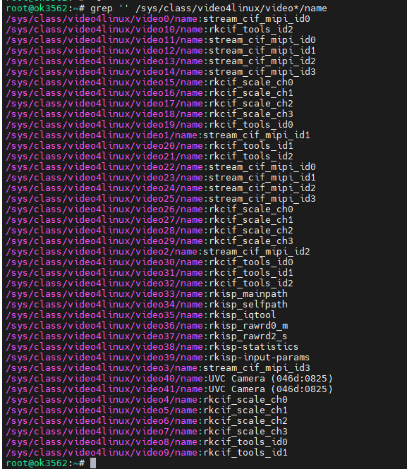
Mainpath, refers to an output node of Rockchip ISP, which can output full-resolution images, generally used to take photos and capture Raw images.
Self Path, refers to an output node of Rockchip ISP, which can only output up to 1080p resolution and is generally used as a preview.
Statistics 3A
Input-params 3A parameter setting
The test methods for the OV13855 are essentially the same as those for the UVC Camera. This section takes OV13855 as an example for testing
4.4.2.1 Camera Recognition Detection and Format Support Queries
root@ok3562:/# v4l2-ctl --list-devices //View the device node
rkcif (platform:rkcif-mipi-lvds):
/dev/video0
/dev/video1
/dev/video2
/dev/video3
/dev/video4
/dev/video5
/dev/video6
/dev/video7
/dev/video8
/dev/video9
/dev/video10
rkisp_mainpath (platform:rkisp-vir0):
/dev/video33
/dev/video34
/dev/video35
/dev/video36
/dev/video37
/dev/media3
WIN2 USB2.0 PC Camera: WIN2 USB (usb-fed00000.usb-1.3):
/dev/video40
/dev/video41
/dev/media4
Format supported queries
root@ok3562:~# v4l2-ctl --list-formats-ext -d /dev/video33 //View formats supported by the camera
ioctl: VIDIOC_ENUM_FMT
Type: Video Capture Multiplanar
[0]: 'UYVY' (UYVY 4:2:2)
Size: Stepwise 32x32 - 4224x3136 with step 8/8
[1]: 'NV16' (Y/CbCr 4:2:2)
Size: Stepwise 32x32 - 4224x3136 with step 8/8
[2]: 'NV61' (Y/CrCb 4:2:2)
Size: Stepwise 32x32 - 4224x3136 with step 8/8
[3]: 'NV21' (Y/CrCb 4:2:0)
Size: Stepwise 32x32 - 4224x3136 with step 8/8
[4]: 'NV12' (Y/CbCr 4:2:0)
Size: Stepwise 32x32 - 4224x3136 with step 8/8
[5]: 'NM21' (Y/CrCb 4:2:0 (N-C))
Size: Stepwise 32x32 - 4224x3136 with step 8/8
[6]: 'NM12' (Y/CbCr 4:2:0 (N-C))
Size: Stepwise 32x32 - 4224x3136 with step 8/8
4.4.2.2. Camera Previews
root@ok3562:~# gst-launch-1.0 v4l2src device=/dev/video33 ! video/x-raw, format=NV12, width=640, height=480, framerate=30/1 ! autovideosink
Setting the pipeline to PAUSED...
arm_release_ver: g13p0-01eac0, rk_so_ver: 3
The pipeline is in use and does not require PREROLL...
Obtaining context from element 'autovideosink0': gst.gl.GLDisplay=context, gst.gl.GLDisplay=(GstGLDisplay)"\(GstGLDisplayGBM\)\ gldisplaygbm0";
[ 1804.445831] rockchip-mipi-csi2 mipi0-csi2: stream on, src_sd: 0000000079d6d796, sd_name:rockchip-csi2-dphy0
The pipeline has been PREROLLED...
[ 1804.445843] rockchip-mipi-csi2 mipi0-csi2: stream ON
Setting the pipeline to PLAYING...
New clock: GstSystemClock
Redistributing latency...9.
0:00:02.3 / 99:99:99.
4.4.2.3 Camera to Take Pictures
root@ok3562:~# gst-launch-1.0 v4l2src device=/dev/video33 num-buffers=1 ! video/x-raw,format=NV12,width=640,height=480 ! mppjpegenc ! filesink location=pic.jpg
Setting the pipeline to PAUSED...
The pipeline is in use and does not require PREROLL...
The pipeline has been PREROLLED...
Setting the pipeline to PLAYING...
New clock: GstSystemClock
[ 1834.394184] rockchip-mipi-csi2 mipi0-csi2: stream on, src_sd: 0000000079d6d796, sd_name:rockchip-csi2-dphy0
[ 1834.394197] rockchip-mipi-csi2 mipi0-csi2: stream ON
rga_api version 1.9.2_[1]
Redistributing latency...
EOS signal received from element 'pipeline0'.
Execution ended after 0:00:00.255613244
Setting the pipeline to NULL...
[ 1834.764004] rockchip-mipi-csi2 mipi0-csi2: stream off, src_sd: 0000000079d6d796, sd_name:rockchip-csi2-dphy0
[ 1834.764032] rockchip-mipi-csi2 mipi0-csi2: stream OFF
Releasing pipeline resources...
root@ok3562:~# ls -l pic.jpg
-rw-r--r-- 1 root root 154027 Apr 28 13:46 pic.jpg
4.4.2.4 Recording H264 Format Video
root@ok3562:~# gst-launch-1.0 v4l2src device=/dev/video33 num-buffers=100 ! video/x-raw,format=NV12, width=640,height=480 ! tee name=t ! queue ! mpph264enc ! queue ! h264parse ! qtmux ! filesink location=13855_h264.mp4 t. ! queue ! autovideosink
// Encode H264 while previewing the camera
Setting the pipeline to PAUSED...
arm_release_ver: g13p0-01eac0, rk_so_ver: 3
The pipeline is in use and does not require PREROLL...
Obtaining context from element 'autovideosink0': gst.gl.GLDisplay=context, gst.gl.GLDisplay=(GstGLDisplay)"\(GstGLDisplayGBM\)\ gldisplaygbm0";
[ 2026.629225] rockchip-mipi-csi2 mipi0-csi2: stream on, src_sd: 0000000079d6d796, sd_name:rockchip-csi2-dphy0
The pipeline has been PREROLLED...
[ 2026.629238] rockchip-mipi-csi2 mipi0-csi2: stream ON
Setting the pipeline to PLAYING...
New clock: GstSystemClock
rga_api version 1.9.2_[1]
Redistributing latency...
Redistributing latency...9.
EOS signal received from element 'pipeline0'.
Execution ended after 0:00:06.868994417
Setting the pipeline to NULL...
[ 2033.610005] rockchip-mipi-csi2 mipi0-csi2: stream off, src_sd: 0000000079d6d796, sd_name:rockchip-csi2-dphy0
[ 2033.610031] rockchip-mipi-csi2 mipi0-csi2: stream OFF
Releasing pipeline resources...
root@ok3562:~# ls -l 13855_h264.mp4 // Check if the H264 file is generated
-rw-r--r-- 1 root root 386944 Apr 28 13:49 13855_h264.mp4
4.4.2.5 Playing H264 Format Video
root@ok3562:~# gst-play-1.0 13855_h264.mp4
// Play the recorded video
Press the "k" key to display the keyboard shortcut list.
Playing /root/13855_h264.mp4
arm_release_ver: g13p0-01eac0, rk_so_ver: 3
Redistribute latency...
0:00:06.6 / 0:00:06.6
Reached the end of the playlist.
4.4.3 OV5645 Test
The corresponding nodes of OV5645 camera are as follows:
P17 (center ov5645 mipi camera): rkcif-mipi-lvds2 P18 (left ov5645 mipi camera): rkcif-mipi-lvds3
4.4.3.1 Camera Identification Detection and Format Support Queries
Camera Recognition Detection
root@ok3562:/# v4l2-ctl --list-devices
//View the device node, you can see that/dev/video11 and/dev/video 22 are ov5645 cameras
rkisp-statistics (platform: rkisp):
/dev/video38
/dev/video39
rkcif-mipi-lvds (platform:rkcif):
/dev/media0
/dev/media1
/dev/media2
rkcif (platform:rkcif-mipi-lvds):
/dev/video0
/dev/video1
/dev/video2
/dev/video3
/dev/video4
/dev/video5
/dev/video6
/dev/video7
/dev/video8
/dev/video9
/dev/video10
rkcif (platform:rkcif-mipi-lvds2):
/dev/video11
/dev/video12
/dev/video13
/dev/video14
/dev/video15
/dev/video16
/dev/video17
/dev/video18
/dev/video19
/dev/video20
/dev/video21
rkcif (platform:rkcif-mipi-lvds3):
/dev/video22
/dev/video23
/dev/video24
/dev/video25
/dev/video26
/dev/video27
/dev/video28
/dev/video29
/dev/video30
/dev/video31
/dev/video32
rkisp_mainpath (platform:rkisp-vir0):
/dev/video33
/dev/video34
/dev/video35
/dev/video36
/dev/video37
/dev/media3
UVC Camera (046d:0825) (usb-fed00000.usb-1.1):
/dev/video40
/dev/video41
/dev/media4
The format supports query. Take P18 (ov5645 mipi camera on the left) rkcif-mipi-lvds3 as an example:
root@ok3562:~# v4l2-ctl --list-formats-ext -d /dev/video22 //View the formats supported by the camera
ioctl: VIDIOC_ENUM_FMT
Type: Video Capture Multiplanar
[0]: 'NV16' (Y/CbCr 4:2:2)
Size: Stepwise 64x64 - 1920x1080 with step 8/8
[1]: 'NV61' (Y/CrCb 4:2:2)
Size: Stepwise 64x64 - 1920x1080 with step 8/8
[2]: 'NV12' (Y/CbCr 4:2:0)
Size: Stepwise 64x64 - 1920x1080 with step 8/8
[3]: 'NV21' (Y/CrCb 4:2:0)
Size: Stepwise 64x64 - 1920x1080 with step 8/8
[4]: 'YUYV' (YUYV 4:2:2)
Size: Stepwise 64x64 - 1920x1080 with step 8/8
[5]: 'YVYU' (YVYU 4:2:2)
Size: Stepwise 64x64 - 1920x1080 with step 8/8
[6]: 'UYVY' (UYVY 4:2:2)
Size: Stepwise 64x64 - 1920x1080 with step 8/8
[7]: 'VYUY' (VYUY 4:2:2)
Size: Stepwise 64x64 - 1920x1080 with step 8/8
4.4.3.2 Camera Capture Format Queries and Modifications
The camera capture format query, taking P18 (ov5645 mipi camera on the left) rkcif-mipi-lvds3 as an example
root@ok3562:/# v4l2-ctl -V -d /dev/video40
Format Video Capture:
Width/Height : 640/480
Pixel Format : 'YUYV' (YUYV 4:2:2)
Field : None
Bytes per Line : 1280
Size Image : 614400
Colorspace : sRGB
Transfer Function : Rec. 709
YCbCr/HSV Encoding: ITU-R 601
Quantization : Default (maps to Limited Range)
Flags :
4.4.3.3 Camera Previews
root@ok3562:~# gst-launch-1.0 v4l2src device=/dev/video22 ! video/x-raw, format=NV12, width=640, height=480, framerate=30/1 ! autovideosink
Setting the pipeline to PAUSED...
The pipeline is in use and does not require PREROLL...
The pipeline has been PREROLLED...
Setting the pipeline to PLAYING...
New clock: GstSystemClock
[ 4118.728856] rockchip-mipi-csi2 mipi3-csi2: stream on, src_sd: 0000000041e9f9af, sd_name:rockchip-csi2-dphy5
[ 4118.728880] rockchip-mipi-csi2 mipi3-csi2: stream ON
[ 4118.728957] mipi3-csi2-hw ERR1:0x1000000 (crc,vc: 0)
[ 4118.757033] mipi3-csi2-hw ERR1:0x1010 (fs/fe mis,vc: 0) (err_data,vc: 0)
Redistributing latency...
0:00:03.0 / 99:99:99.
4.5 GPU Test
OK3562 supports GPU test, first install glmark2-es2
root@ok3562:~# apt-get install glmark2-es2
Reading package lists... Done
Building dependency tree... Done
Reading state information... Done
The following packages were automatically installed and are no longer required:
activity-log-manager ibus-data ibus-gtk ibus-gtk3 ibus-gtk4 libdee-1.0-4 libgeonames-common libgeonames0 libtimezonemap-data libtimezonemap1 libunity-control-center1 libxcb-xv0
libzeitgeist-2.0-0 python3-ibus-1.0 zeitgeist-core
Use 'apt autoremove' to remove them.
The following NEW packages will be installed:
glmark2-es2
0 upgraded, 1 newly installed, 0 to remove and 19 not upgraded.
Need to get 176 kB of archives.
After this operation, 522 kB of additional disk space will be used.
Get:1 http://ports.ubuntu.com/ubuntu-ports jammy/universe arm64 glmark2-es2 arm64 2021.02-0ubuntu1 [176 kB]
176 kB downloaded in 3s (57.1 kB/s)
Selecting previously unselected package glmark2-es2.
(Reading database ... There are 176499 files and directories currently installed in the system.)
Preparing to unpack .../glmark2-es2_2021.02-0ubuntu1_arm64.deb ...
Unpacking glmark2-es2 (2021.02-0ubuntu1) ...
Setting up glmark2-es2 (2021.02-0ubuntu1) ...
Processing triggers for man-db (2.10.2-1) ...
Perform the glmark2-es2 test:
root@ok3562:~# glmark2-es2 --fullscreen --visual-config='a=0:buf=24' --annotate
arm_release_ver: g13p0-01eac0, rk_so_ver: 3
arm_release_ver: g13p0-01eac0, rk_so_ver: 3
=======================================================
glmark2 2021.02
=======================================================
OpenGL Information
GL_VENDOR: ARM
GL_RENDERER: Mali-G52
GL_VERSION: OpenGL ES 3.2 v1.g13p0-01eac0.0fd2effaec483a5f4c440d2ffa25eb7a
=======================================================
[build] use-vbo=false: FPS: 221 FrameTime: 4.525 ms
[build] use-vbo=true: FPS: 252 FrameTime: 3.968 ms
[texture] texture-filter=nearest: FPS: 322 FrameTime: 3.106 ms
[texture] texture-filter=linear: FPS: 317 FrameTime: 3.155 ms
[texture] texture-filter=mipmap: FPS: 319 FrameTime: 3.135 ms
[shading] shading=gouraud: FPS: 243 FrameTime: 4.115 ms
[shading] shading=blinn-phong-inf: FPS: 261 FrameTime: 3.831 ms
[shading] shading=phong: FPS: 245 FrameTime: 4.082 ms
[shading] shading=cel: FPS: 239 FrameTime: 4.184 ms
[bump] bump-render=high-poly: FPS: 155 FrameTime: 6.452 ms
[bump] bump-render=normals: FPS: 324 FrameTime: 3.086 ms
[bump] bump-render=height: FPS: 320 FrameTime: 3.125 ms
[effect2d] kernel=0,1,0;1,-4,1;0,1,0;: FPS: 219 FrameTime: 4.566 ms
[effect2d] kernel=1,1,1,1,1;1,1,1,1,1;1,1,1,1,1;: FPS: 110 FrameTime: 9.091 ms
[pulsar] light=false:quads=5:texture=false: FPS: 325 FrameTime: 3.077 ms
[desktop] blur-radius=5:effect=blur:passes=1:separable=true:windows=4: FPS: 119 FrameTime: 8.403 ms
[desktop] effect=shadow:windows=4: FPS: 233 FrameTime: 4.292 ms
[buffer] columns=200:interleave=false:update-dispersion=0.9:update-fraction=0.5:update-method=map: FPS: 111 FrameTime: 9.009 ms
[buffer] columns=200:interleave=false:update-dispersion=0.9:update-fraction=0.5:update-method=subdata: FPS: 111 FrameTime: 9.009 ms
[buffer] columns=200:interleave=true:update-dispersion=0.9:update-fraction=0.5:update-method=map: FPS: 138 FrameTime: 7.246 ms
[ideas] speed=duration: FPS: 192 FrameTime: 5.208 ms
[jellyfish] <default>: FPS: 204 FrameTime: 4.902 ms
[terrain] <default>: FPS: 31 FrameTime: 32.258 ms
[shadow] <default>: FPS: 155 FrameTime: 6.452 ms
[refract] <default>: FPS: 57 FrameTime: 17.544 ms
[conditionals] fragment-steps=0:vertex-steps=0: FPS: 318 FrameTime: 3.145 ms
[conditionals] fragment-steps=5:vertex-steps=0: FPS: 286 FrameTime: 3.497 ms
[conditionals] fragment-steps=0:vertex-steps=5: FPS: 318 FrameTime: 3.145 ms
[function] fragment-complexity=low:fragment-steps=5: FPS: 305 FrameTime: 3.279 ms
[function] fragment-complexity=medium:fragment-steps=5: FPS: 265 FrameTime: 3.774 ms
[loop] fragment-loop=false:fragment-steps=5:vertex-steps=5: FPS: 305 FrameTime: 3.279 ms
[loop] fragment-steps=5:fragment-uniform=false:vertex-steps=5: FPS: 317 FrameTime: 3.155 ms
[loop] fragment-steps=5:fragment-uniform=true:vertex-steps=5: FPS: 336 FrameTime: 2.976 ms
=======================================================
glmark2 Score: 232
=======================================================
5. System Flashing
The OK3562-C development board currently supports both OTG and TF card programming. The corresponding burning tool is provided in the user information, and the user can choose anyone to burn the image.
5.1 OTG Flashing System
5.1.1 OTG Driver Installation
Path: User Information \ Software Information \ 3-Tools \ DriverAssitant _ v5.1.1.zip
Extract the above path file to any directory and run it with administrator privileges
Open DriverInstall.exe

Click “Driver Installation”

5.1.2 OTG Full Flashing Test
5.1.2.1 RKDevTool Flashing Test
Path: User Information \ Software Information \ 3-Tools \ \RKDevTool_v3.19_for_window.zip.**
It is a development tool provided by Rockchip Micro. Unzip it to a full English path before use, connect the TYPE-C0 port of the development board and the host computer with a Type-C cable, press and hold the recovery key of the development board and don’t release it, then press the reset key to reset the system, and release the recovery key after about two seconds. There will be prompts on the Rockchip development tool : loader device found
Note:
The device detection operation requires the recovery button to be held down when the development board is powered on;
Theoretically, Rockchip development tools have no requirements for the unzip directory. However, some users have feedback that the unzip directory should be in full English. If the tool doesn’t match the following figure, please consider unzipping it in an English directory;
The OTG port is on the back of the development board.
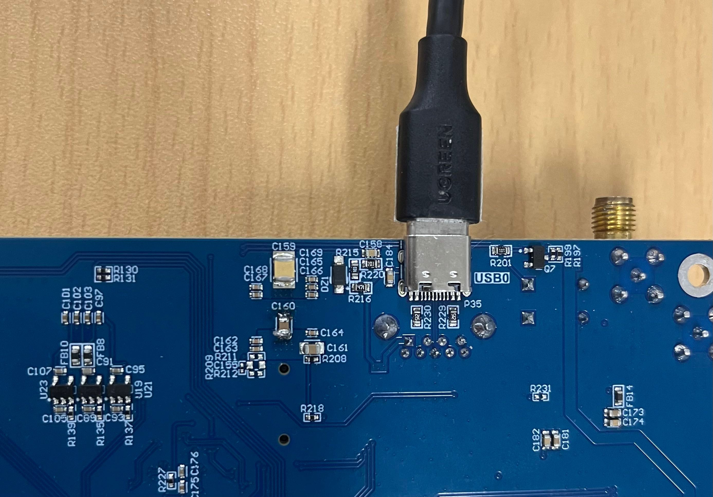
Open the Rockchip development tool:

Click the “Upgrade Firmware” tab, click the “Firmware” button to select the full upgrade image update.img. The program will be parsing the firmware, so wait a while.

Click “Switch” to wait for the board to enter the LOADER mode, and click the “Upgrade” button to upgrade.

Introduction to MASKROM mode
If Loader mode is inaccessible (loader problem, etc.), press and hold the BOOT key, then press the reset key to enter maskrom mode for burning.

At this time, the system will prompt the discovery of a maskrom device. The flashing process is consistent with the loader mode, so it is best to use an update.img burning.
Note:
Don’t click “Device Partition Table” in maskrom mode, it is invalid;
Note: A separate flash in maskrom mode will not clear the UBOOT environment variables.
5.1.2.2 Factory Tool Flashing Test
Factory Tool is a factory batch OTG flashing tool, which does not need to read the image and supports large file flashing. Use this tool if RKDevTool is not compatible. Before use, you need to decompress to the full English path, connect the development board to the host, press the recovery key, press the reset key to reset, and release the recovery key after two seconds. There will be prompts on the Rockchip development tool : loader device found
Note:
The device detection operation requires the recovery button to be held down when the development board is powered on;
Theoretically, Rockchip development tools have no requirements for the unzip directory. However, some users have feedback that the unzip directory should be in full English. If the tool doesn’t match the following figure, please consider unzipping it in an English directory.
Open the Rockchip development tool:
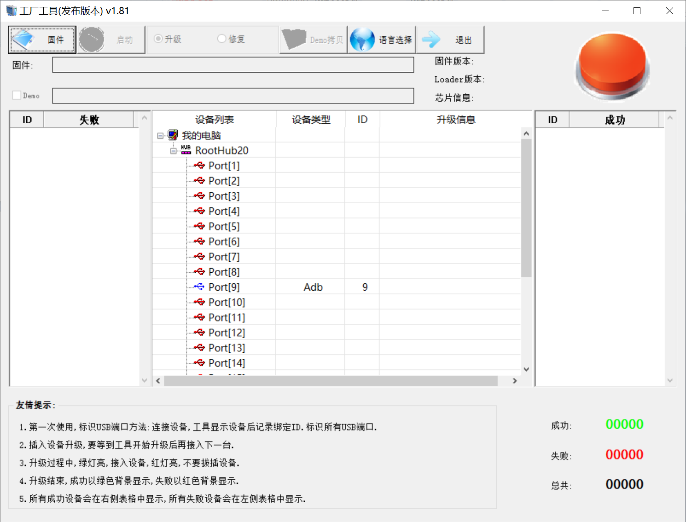
Click to select the firmware, and click to start. At this time to recognize the loader device will automatically start burning.

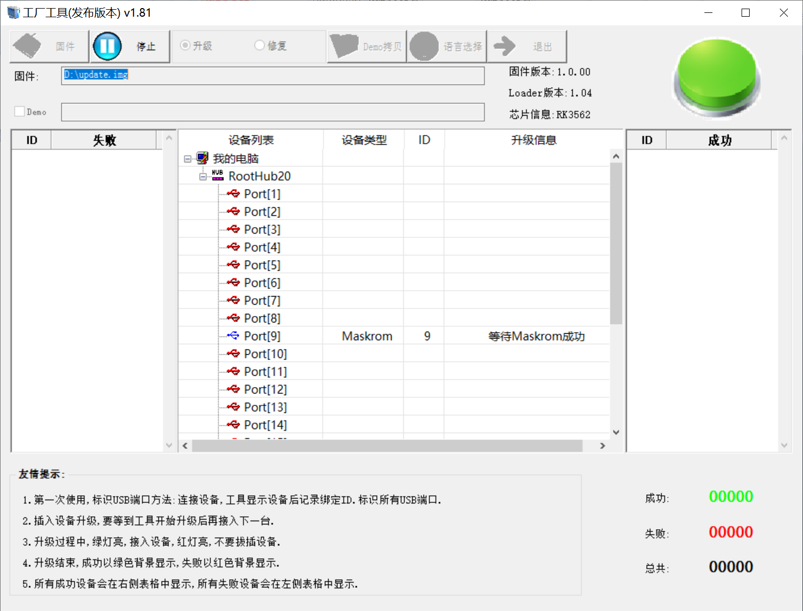
5.1.3 OTG Step Flashing Test
In the development phase, it is very time-consuming to burn all of them every time, so here is the method of using OTG burning tool to burn in separate partitions.
Note: The condition for recognition is that the development board is powered up and the recover key is in the pressed state.
First, after OK3562-linux-release is compiled, a separate partition image can be found in the rockdev directory.
Take separate programming boot.img (including device tree and startup logo) as an example to demonstrate the programming method.
Use the Type-C cable to connect the development board to the host. Press and hold the recover key and do not release it. Then press the reset key to reset the system. Release the recover key after about two seconds. The system will prompt to discover the loader device.
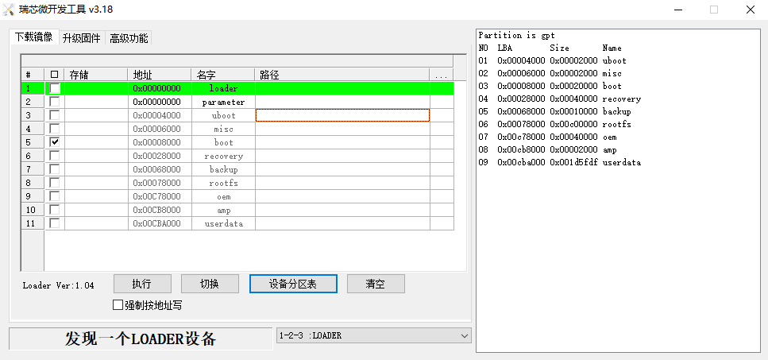
Click the “Device Partition Table” button, which will automatically read the partition address, and prompt you to update the download address, click “Yes”, will be reported to read the partition table successfully, click on the partition of the right test area to select the partition image, and check the partition.

Click the “Execute” button will automatically burn and restart.
5.2 TF Card Flashing
TF card flashing and testing.
Note: The maximum capacity of the test TF card is 32G, using a TF card above 32G may fail to flash.
Copy SDDiskTool_v1.76.zip from the user profile tools directory to any directory on windows. Run SD_Firmware_Tool.exe with administrator privileges.

Select the disk device, check “Firmware Upgrade” and select update.img. Click Start Creating.


Insert the TF card into the development board and start, the system will automatically enter the flashing process. When the flashing is complete, both the screen and the serial port will prompt:
Please remove SD CARD!!!, wait for reboot.
At this time, pull out the TF card, the system automatically restarts (please do not power down directly).
During mass production, check the flashing status by SoM heartbeat light. Heartbeat light modes are as follows:
Kernel startup phase: Heartbeat light mode, regular intermittent flashes.
Flashing preparation phase: EMMC indicator light, off.
Flashing in progress phase: EMMC indicator light, on.
Flashing completion phase: Heartbeat light mode, regular intermittent flashes.
Serial port information during the burning process:
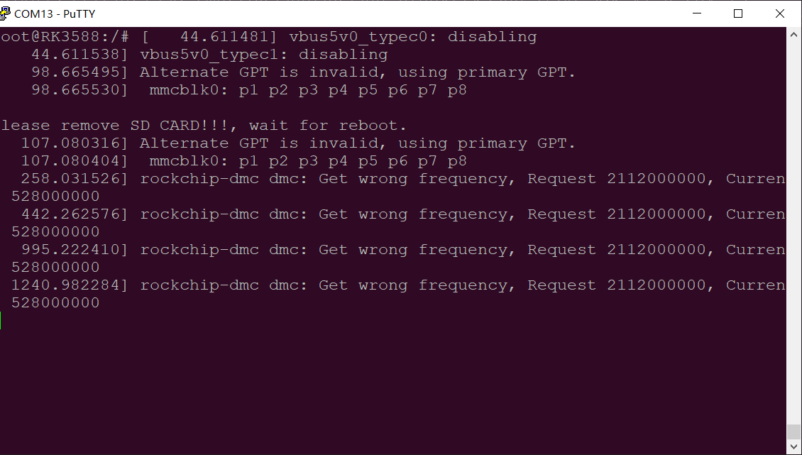
If the automatic restart does not occur after removing the TF card, a manual restart can also complete the burning. Please be patient during the burning process.